20. 可視化[発展]
20.1 概要
第17章では{ggplot2}の仕組みについて、第18章ではよく使われる5種類のプロット（棒グラフ、散布図、折れ線グラフ、箱ひげ図、ヒストグラム）の作り方を、第19章ではスケール、座標系などの操作を通じたグラフの見た目調整について解説しました。本章では第18章の延長線上に位置づけることができ、紹介しきれなかった様々なグラフの作り方について簡単に解説します。本章で紹介するグラフは以下の通りです。
- バイオリンプロット
- ラグプロット
- リッジプロット
- エラーバー付き散布図
- ロリーポップチャート
- 平滑化ライン
- ヒートマップ
- 等高線図
- 地図
- 非巡回有向グラフ
- バンプチャート
- 沖積図
- ツリーマップ
- モザイクプロット
Country_df <- read_csv("Data/Countries.csv")
COVID19_df <- read_csv("Data/COVID19_Worldwide.csv", guess_max = 10000)20.2 バイオリンプロット
バイオリンプロットは連続変数の分布を可視化する際に使用するプロットの一つです。第17章で紹介しましたヒストグラムや箱ひげ図と目的は同じです。それではバイオリンプロットとは何かについて例を見ながら解説します。
以下の図は対数化した一人当たり購買力平価GDP（PPP_per_capita）のヒストグラムです。
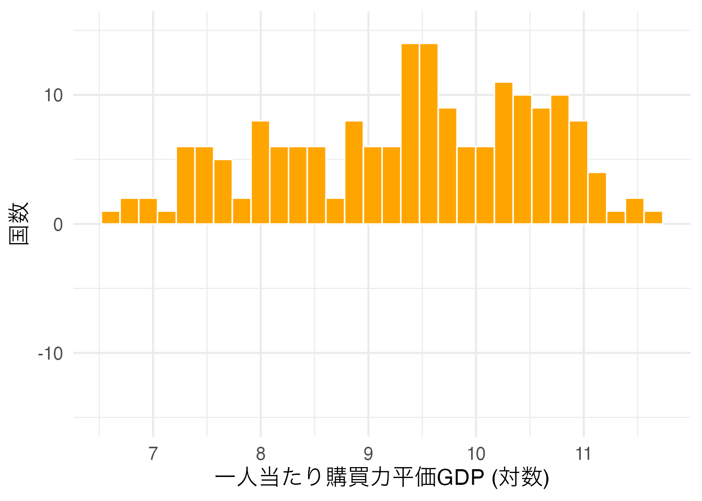
このヒストグラムをなめらかにすると以下のような図になります。
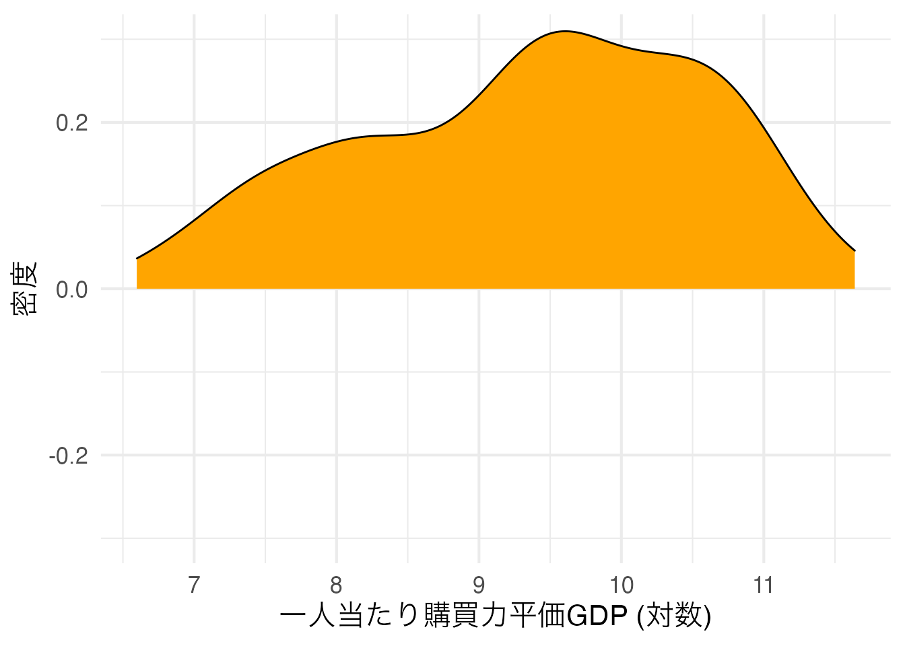
この密度曲線を上下対称にすると以下のような図となり、これがバイオリンプロットです。ヒストグラムのようにデータの分布が分かりやすくなります。
しかし、この図の場合、ヒストグラムと同様、中央値や四分位数などの情報が含まれておりません。これらの箱ひげ図を使用した方が良いでしょう。バイオリンプロットの良い点はバイオリンの中に箱ひげ図を入れ、ヒストグラムと箱ひげ図両方の長所を取ることができる点です。たとえば、バイオリンプロットを90度回転させ、中にバイオリン図を入れると以下のようになります。
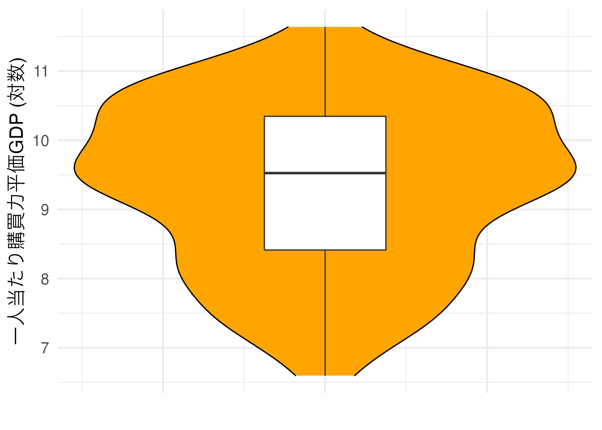
それでは実際にバイオリンプロットを作ってみましょう。使い方は箱ひげ図（geom_boxplot()）と同じです。たとえば、横軸は大陸（Continent）に、縦軸は対数化した一人当たり購買力平価GDP（PPP_per_capita）にしたバイオリンプロットを作るには作るにはgeom_violin()幾何オブジェクトの中にマッピングするだけです。大陸ごとに色分けしたい場合はfill引数にContinentをマッピングします。
Country_df %>%
ggplot() +
geom_violin(aes(x = Continent, y = PPP_per_capita, fill = Continent)) +
labs(x = "大陸", y = "一人当たり購買力平価GDP (対数)") +
scale_y_continuous(breaks = c(0, 1000, 10000, 100000),
labels = c(0, 1000, 10000, 100000),
trans = "log10") + # y軸を対数化
guides(fill = "none") + # fillのマッピング情報の凡例を隠す
theme_minimal(base_family = "HiraKakuProN-W3",
base_size = 16) ここに箱ひげ図も載せたい場合は、geom_violin()オブジェクトの後にgeom_boxplot()オブジェクトを入れるだけで十分です。
Country_df %>%
ggplot() +
geom_violin(aes(x = Continent, y = PPP_per_capita, fill = Continent)) +
geom_boxplot(aes(x = Continent, y = PPP_per_capita),
width = 0.2) +
labs(x = "大陸", y = "一人当たり購買力平価GDP (対数)") +
scale_y_continuous(breaks = c(0, 1000, 10000, 100000),
labels = c(0, 1000, 10000, 100000),
trans = "log10") +
guides(fill = "none") +
theme_minimal(base_family = "HiraKakuProN-W3",
base_size = 16)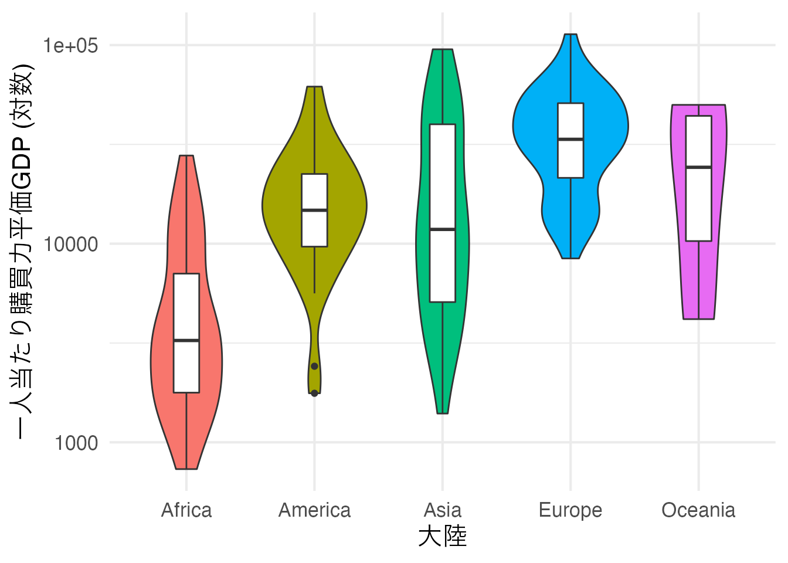
箱ひげ図は四分位範囲、四分位数、最小値、最大値などの情報を素早く読み取れますが、どの値当たりが分厚いかなどの情報が欠けています。これをバイオリンプロットで補うことで、よりデータの分布を的確に把握することができます。
20.3 ラグプロット
ラグプロット（rug plot）は変数の分布を示す点ではヒストグラム、箱ひげ図、バイオリンプロットと同じ目的を持ちますが、大きな違いとしてはラグプロット単体で使われるケースがない（または、非常に稀）という点です。ラグプロットは上述しましたヒストグラムや箱ひげ図、または散布図などと組み合わせて使うのが一般的です。
以下はCountry_dfのPPP_per_capita（常用対数変換）のヒストグラムです。
Country_df %>%
drop_na(PPP_per_capita) %>%
ggplot() +
geom_histogram(aes(x = PPP_per_capita), bins = 15, color = "white") +
labs(x = "PPP per capita (USD; log scale)",
y = "Number of Countries") +
scale_x_log10() +
guides(fill = "none") +
theme_minimal(base_size = 12)一変数の分布を確認する場合、ヒストグラムは情報量の損失が少ない方です。それでも値一つ一つの情報は失われますね。例えば、上記のヒストグラムで左端の度数は1です。左端の棒の区間はおおよそ500から780であり、一人当たりPPPがこの区間に属する国は1カ国ということです。ちなみに、その国はブルンジ共和国ですが、ブルンジ共和国の具体的な一人当たりPPPはヒストグラムから分かりません。情報量をより豊富に持たせるためには区間を細かく刻むことも出来ますが、逆に分布の全体像が読みにくくなります。
ここで登場するのがラグプロットです。これは座標平面の端を使ってデータを一時現状に並べたものです。多くの場合、点ではなく、垂直線（｜）を使います。ラグプロットの幾何オブジェクトは{ggplot2}でデフォルトで提供されており、geom_rug()を使います。マッピングはxまたはyに対して行いますが、座標平面の下段にラグプロットを出力する場合はxに変数（ここではPPP_per_capita）をマッピングします。
Country_df %>%
drop_na(PPP_per_capita) %>%
ggplot() +
geom_histogram(aes(x = PPP_per_capita), bins = 15, color = "white") +
geom_rug(aes(x = PPP_per_capita)) +
labs(x = "PPP per capita (USD; log scale)",
y = "Number of Countries") +
scale_x_log10() +
theme_minimal(base_size = 12)ラグプロットを使うと本来のヒストグラムの外見にほぼ影響を与えず、更に情報を付け加えることが可能です。点（｜）の密度でデータの分布を確認することもできますが、その密度の相対的な比較に関してはヒストグラムの方が良いでしょう。
ラグプロットは散布図に使うことも可能です。散布図は一つ一つの点が具体的な値がマッピングされるため、情報量の損失はほぼないでしょう。それでも散布図にラグプロットを加える意味はあります。まず、Country_dfのフリーダムハウス指数（FH_Total）と一人当たりPPP（PPP_per_capita）の散布図を作ってみましょう。
Country_df %>%
drop_na(FH_Total, PPP_per_capita) %>%
ggplot() +
geom_point(aes(x = FH_Total, y = PPP_per_capita)) +
labs(x = "Freedom House Score", y = "PPP per capita (USD)") +
scale_y_continuous(breaks = seq(0, 120000, by = 10000),
labels = seq(0, 120000, by = 10000)) +
guides(fill = "none") +
theme_minimal(base_size = 12)散布図の目的は二変量間の関係を確認することであって、それぞれの変数の分布を確認することではありません。もし、FH_TotalとPPP_per_capitaの分布が確認したいなら、それぞれのヒストグラムや箱ひげ図を作成した方が良いでしょう。しかし、ラグプロットを使えば、点（｜）の密度で大まかな分布は確認出来ますし、図の見た目にもほぼ影響を与えません。
横軸と縦軸両方のラグプロットは、geom_rug()にxとy両方マッピングするだけです。
Country_df %>%
drop_na(FH_Total, PPP_per_capita) %>%
ggplot() +
geom_point(aes(x = FH_Total, y = PPP_per_capita)) +
geom_rug(aes(x = FH_Total, y = PPP_per_capita)) +
labs(x = "Freedom House Score", y = "PPP per capita (USD)") +
scale_y_continuous(breaks = seq(0, 120000, by = 10000),
labels = seq(0, 120000, by = 10000)) +
guides(fill = "none") +
theme_minimal(base_size = 12) これでFH_Totalはほぼ均等に分布していて、PPP_per_capitaは2万ドル以下に多く密集していることが確認できます。
{ggExtra}のggMarginal()を使えば、ラグプロットでなく、箱ひげ図やヒストグラムを付けることも可能です。{ggplot2}で作図した図をオブジェクトとして格納し、ggMarginal()の第一引数として指定します。第一引数のみだと密度のだけ出力されるため、箱ひげ図を付けるためにはtype = "boxplot"を指定します（既定値は"density"）。ヒストグラムを出力する場合は"histogram"と指定します。
Scatter_Fig1 <- Country_df %>%
drop_na(FH_Total, PPP_per_capita) %>%
ggplot() +
geom_point(aes(x = FH_Total, y = PPP_per_capita)) +
labs(x = "Freedom House Score", y = "PPP per capita (USD)") +
scale_y_continuous(breaks = seq(0, 120000, by = 10000),
labels = seq(0, 120000, by = 10000)) +
guides(fill = "none") +
theme_minimal(base_size = 12)
ggExtra::ggMarginal(Scatter_Fig1, type = "boxplot")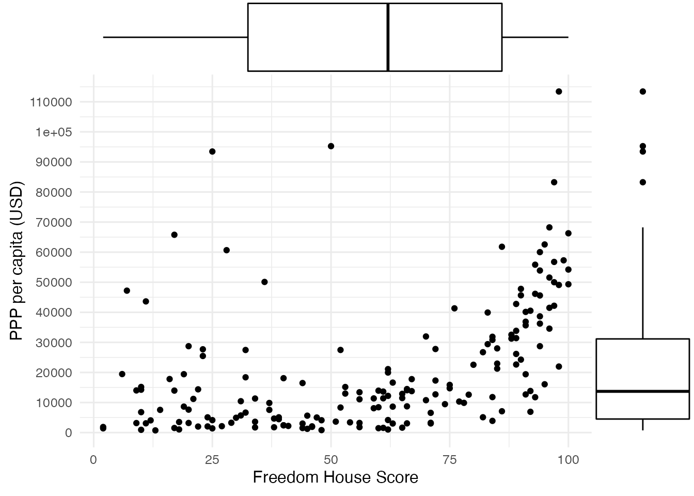
20.4 リッジプロット
リッジプロット（ridge plot）はある変数の分布をグループごとに出力する図です。大陸ごとの人間開発指数の分布を示したり、時系列データなら分布の変化を示す時にも使えます。ここでは大陸ごとの人間開発指数の分布をリッジプロットで示してみましょう。
リッジプロットを作成する前に、geom_density()幾何オブジェクトを用い、変数の密度曲線（density curve）を作ってみます。マッピングはxに対し、分布を出力する変数名を指定します。また、密度曲線内部に色塗り（fill）をし、曲線を計算する際のバンド幅（bw）は0.054にします。bwが大きいほど、なめらかな曲線になります。
Country_df %>%
ggplot() +
geom_density(aes(x = HDI_2018), fill = "gray70", bw = 0.054) +
labs(x = "2018年人間開発指数", y = "大陸") +
theme_minimal(base_family = "HiraKakuProN-W3",
base_size = 12)
これを大陸ごとに出力する場合、ファセット分割を行います。今回は大陸ごとに1列（ncol = 1）でファセットを分割します。
Country_df %>%
ggplot() +
geom_density(aes(x = HDI_2018), fill = "gray70", bw = 0.054) +
labs(x = "2018年人間開発指数", y = "大陸") +
facet_wrap(~Continent, ncol = 1) +
theme_minimal(base_family = "HiraKakuProN-W3",
base_size = 12)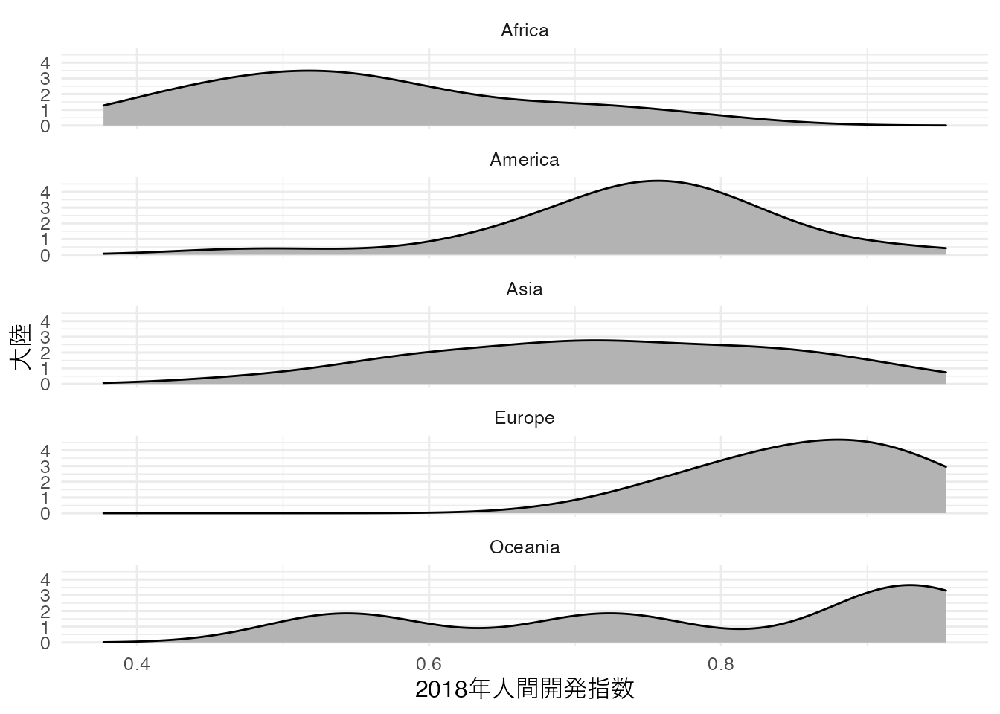
それでは上のグラフをリッジプロットとして作図してみましょう。今回は{ggridges}パッケージを使います。
使用する幾何オブジェクトはgeom_density_ridges()です。似たような幾何オブジェクトとしてgeom_ridgeline()がありますが、こちらは予め密度曲線の高さを計算しておく必要があります。一方、geom_density_ridges()は変数だけ指定すれば密度を自動的に計算してくれます。マッピングはxとyに対し、それぞれ分布を出力する変数名とグループ変数名を指定します。また、密度曲線が重なるケースもあるため、透明度（alpha）も0.5にしておきましょう。ここでは別途指定しませんが、ハンド幅も指定可能であり、aes()の外側にbandwidthを指定するだけです。
Country_df %>%
ggplot() +
geom_density_ridges(aes(x = HDI_2018, y = Continent),
alpha = 0.5) +
labs(x = "2018年人間開発指数", y = "大陸") +
theme_minimal(base_family = "HiraKakuProN-W3",
base_size = 12)## Picking joint bandwidth of 0.054先ほど作図した図と非常に似た図が出来上がりました。ファセット分割に比べ、空間を最大限に活用していることが分かります。ファセットラベルがなく、グループ名が縦軸上に位置するからです。また、リッジプロットの特徴は密度曲線がオーバラップする点ですが、以下のようにscale = 1を指定すると、オーバラップなしで作成することも可能です。もし、scale = 3にすると最大2つの密度曲線が重なることになります。たとえば最下段のアフリカはアメリカの行と若干オーバラップしていますが、scale = 3の場合、アジアの行までオーバーラップされうることになります。
Country_df %>%
ggplot() +
geom_density_ridges(aes(x = HDI_2018, y = Continent),
scale = 1, alpha = 0.5) +
labs(x = "2018年人間開発指数", y = "大陸") +
theme_minimal(base_family = "HiraKakuProN-W3",
base_size = 12)## Picking joint bandwidth of 0.054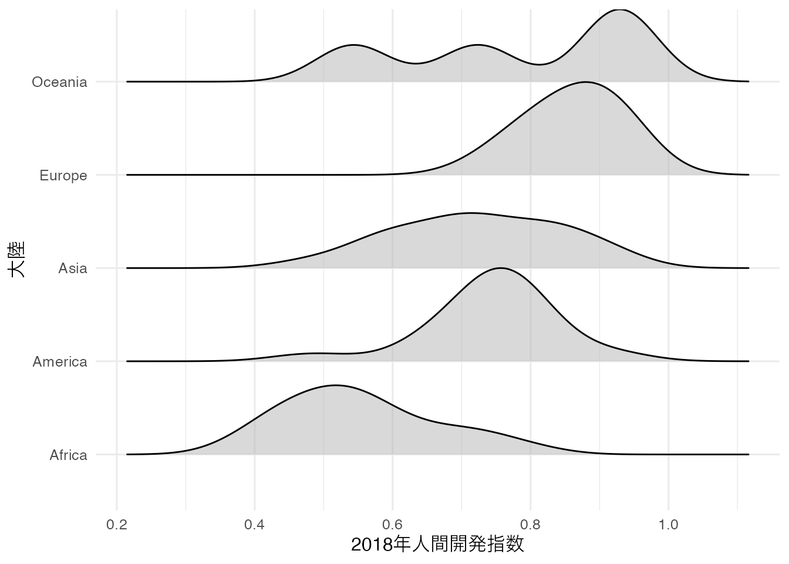
また、横軸の値に応じて背景の色をグラデーションで表現することも可能です。この場合、geom_density_ridges()幾何オブジェクトでなく、geom_density_ridges_gradient()を使い、fillにもマッピングをする必要があります。横軸（x）の値に応じて色塗りをする場合、fill = stat(x)とします。デフォルトでは横軸の値が高いほど空色、低いほど黒になります。ここでは高いほど黄色、低いほど紫ににするため、色弱にも優しいscale_fill_viridis_c()を使い89、カラーオプションはplasmaにします（option = "c"）。
Country_df %>%
ggplot() +
geom_density_ridges_gradient(aes(x = HDI_2018, y = Continent, fill = stat(x)),
alpha = 0.5) +
scale_fill_viridis_c(option = "C") +
labs(x = "2018年人間開発指数", y = "大陸", fill = "2018年人間開発指数") +
theme_minimal(base_family = "HiraKakuProN-W3",
base_size = 12) +
theme(legend.position = "bottom")## Picking joint bandwidth of 0.054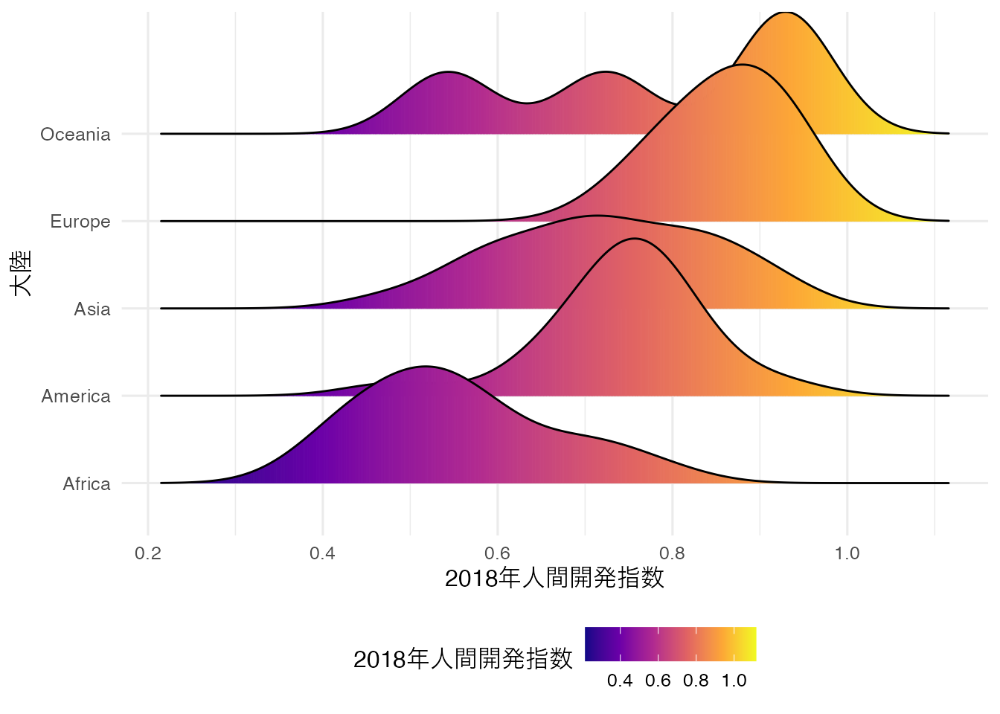
密度曲線は基本的にはなめらかな曲線であるため、データが存在しない箇所にも密度が高く見積もられるケースがあります。全体的な分布を俯瞰するには良いですが、情報の損失は避けられません。そこで出てくるのが点付きのリッジプロットです。HDI_2018の個々の値を点で出力するにはjittered_points = TRUEを指定するだけです。これだけで密度曲線の内側に点が若干のズレ付き（jitter）で出力されます。ただし、密度曲線がオーバーラップされるリッジプロットの特徴を考えると、グループごとに点の色分けをする必要があります（同じ色になると、どのグループの点かが分からなくなるので）。この場合、point_colorに対し、グループ変数（Continent）をマッピングします。また、密度曲線の色と合わせるために密度曲線の色塗りもfillで指定します。
Country_df %>%
ggplot() +
geom_density_ridges(aes(x = HDI_2018, y = Continent, fill = Continent,
point_color = Continent),
alpha = 0.5, jittered_points = TRUE) +
guides(fill = "none", point_color = "none") + # 凡例を削除
labs(x = "2018年人間開発指数", y = "大陸") +
theme_minimal(base_family = "HiraKakuProN-W3",
base_size = 12)## Picking joint bandwidth of 0.054
他にも密度曲線の下側にラグプロットを付けることも可能です。こうすれば点ごとに色訳をする必要もなくなります。ラグプロットを付けるためには点の形（point_shape）を「|」にする必要があります。ただ、これだけだと「|」が密度曲線内部に散らばる（jittered）だけです。散らばりをなくす、つまり密度曲線の下段に固定する必要があり、これはaes()その外側にposition = position_points_jitter(width = 0, height = 0)を指定することで出来ます。
Country_df %>%
ggplot() +
geom_density_ridges(aes(x = HDI_2018, y = Continent, fill = Continent),
alpha = 0.5, jittered_points = TRUE,
position = position_points_jitter(width = 0, height = 0),
point_shape = "|", point_size = 3) +
guides(fill = "none") +
labs(x = "2018年人間開発指数", y = "大陸") +
theme_minimal(base_family = "HiraKakuProN-W3",
base_size = 12)## Picking joint bandwidth of 0.054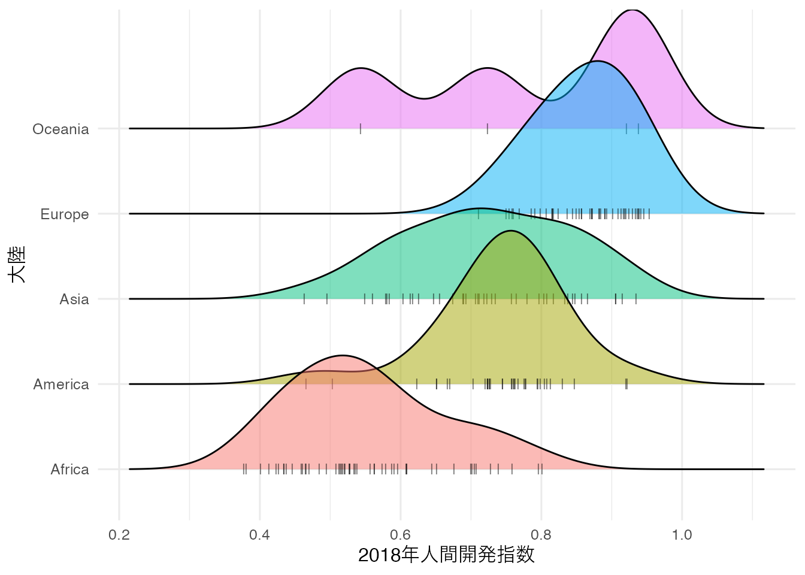
最後に密度曲線でなく、ヒストグラムで示す方法を紹介します。これはgeom_density_ridges()の内部にstat = "binline"を指定するだけです。
Country_df %>%
ggplot() +
geom_density_ridges(aes(x = HDI_2018, y = Continent), alpha = 0.5,
stat = "binline") +
labs(x = "2018年人間開発指数", y = "大陸") +
theme_minimal(base_family = "HiraKakuProN-W3",
base_size = 12)## `stat_binline()` using `bins = 30`. Pick better value with `binwidth`.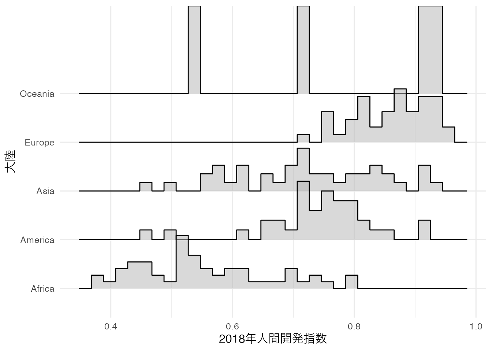
20.5 エラーバー付き散布図
エラーバー付きの散布図は推定結果の点推定値とその不確実性（信頼区間など）を示す際によく使われる図です。以下の表はCountry_dfを用い、大陸（オセアニアを除く）ごとにフリーダムハウス・スコア（FH_Total）を一人当たりPPP GDP（PPP_per_capita）に回帰させた分析から得られたフリーダムハウス・スコア（FH_Total）の係数（以下の式の\(\beta_1\)）の点推定値と95%信頼区間です。
\[ \text{PPP per capita} = \beta_0 + \beta_1 \cdot \text{FH_Total} + \varepsilon \]
Pointrange_df <- tibble(
Continent = c("Asia", "Europe", "Africa", "America"),
Coef = c(65.3, 588.0, 53.4, 316.0),
Conf_lwr = c(-250.0, 376.0, -14.5, 128.0),
Conf_upr = c(380.0, 801.0, 121.0, 504.0)
)## # A tibble: 4 × 4
## # Groups: Continent [4]
## Continent Coef Conf_lwr Conf_upr
## <chr> <dbl> <dbl> <dbl>
## 1 Asia 65.3 -250. 380.
## 2 Europe 588. 376. 801.
## 3 Africa 53.4 -14.5 121.
## 4 America 316. 128. 504.実は以上のデータは以下のようなコードで作成されています。{purrr}パッケージの使い方に慣れる必要があるので、第24章を参照してください。
Pointrange_df <- Country_df %>%
filter(Continent != "Oceania") %>%
group_by(Continent) %>%
nest() %>%
mutate(Fit = map(data, ~lm(PPP_per_capita ~ FH_Total, data = .)),
Est = map(Fit, broom::tidy, conf.int = TRUE)) %>%
unnest(Est) %>%
filter(term == "FH_Total") %>%
select(Continent, Coef = estimate,
Conf_lwr = conf.low, Conf_upr = conf.high) このPointrange_dfを用いて横軸は大陸（Continent）、縦軸には点推定値（Coef）と95%信頼区間（Conf_lwrとConf_upr）を出力します。ここで使う幾何オブジェクトはgeom_pointrange()です。横軸xと点推定値y、95%信頼区間の下限のymin、上限のymaxにマッピングします。エラーバー付き散布図を立てに並べたい場合はyとx、xmin、xmaxにマッピングします。
Pointrange_df %>%
ggplot() +
geom_hline(yintercept = 0, linetype = 2) +
geom_pointrange(aes(x = Continent, y = Coef,
ymin = Conf_lwr, ymax = Conf_upr),
size = 0.75) +
labs(y = expression(paste(beta[1], " with 95% CI"))) +
theme_bw(base_size = 12)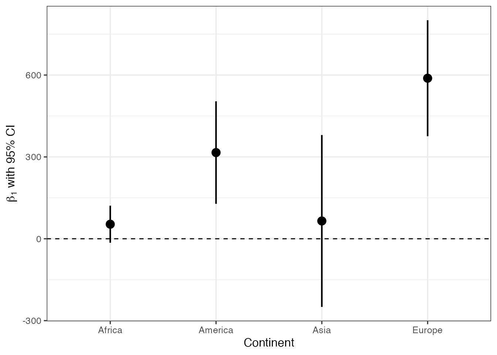
ここでもう一つの次元を追加することもあるでしょう。たとえば、複数のモデルを比較した場合がそうかもしれません。以下のPointrange_df2について考えてみましょう。
Pointrange_df2 <- tibble(
Continent = rep(c("Asia", "Europe", "Africa", "America"), each = 2),
Term = rep(c("Civic Liverty", "Political Right"), 4),
Coef = c(207.747, 29.188, 1050.164, 1284.101,
110.025, 93.537, 581.4593, 646.9211),
Conf_lwr = c(-385.221, -609.771, 692.204, 768.209,
-12.648, -53.982, 262.056, 201.511),
Conf_upr = c(800.716, 668.147, 1408.125, 1801.994,
232.697, 241.057, 900.863, 1092.331))## # A tibble: 8 × 5
## # Groups: Continent [4]
## Continent Term Coef Conf_lwr Conf_upr
## <chr> <chr> <dbl> <dbl> <dbl>
## 1 Asia Civic Liberty 208. -385. 801.
## 2 Asia Political Right 29.2 -610. 668.
## 3 Europe Civic Liberty 1050. 692. 1408.
## 4 Europe Political Right 1285. 768. 1802.
## 5 Africa Civic Liberty 110. -12.6 233.
## 6 Africa Political Right 93.5 -54.0 241.
## 7 America Civic Liberty 581. 262. 901.
## 8 America Political Right 647. 202. 1092.このデータは以下の2つのモデルを大陸ごとに推定した\(\beta_1\)と\(\gamma_1\)の点推定値と95%信頼区間です。
\[ \begin{aligned} \text{PPP per capita} & = \beta_0 + \beta_1 \cdot \text{FH_CL} + \varepsilon \\ \text{PPP per capita} & = \gamma_0 + \gamma_1 \cdot \text{FH_PR} + \upsilon \end{aligned} \]
どの説明変数を用いたかでエラーバーと点の色分けを行う場合、colorに対してTermをマッピングします。
Pointrange_df2 %>%
ggplot() +
geom_hline(yintercept = 0, linetype = 2) +
geom_pointrange(aes(x = Continent, y = Coef,
ymin = Conf_lwr, ymax = Conf_upr,
color = Term), size = 0.75) +
labs(y = expression(paste(beta[1], " and ", gamma[1], " with 95% CI")),
color = "") +
theme_bw(base_size = 12) +
theme(legend.position = "bottom") 何か違いますね。この2つのエラーバーと点の位置をずらす必要があるようです。これは3次元以上の棒グラフで使ったposition引数で調整可能です。今回は実引数としてposition_dodge(0.5)を指定してみましょう。
Pointrange_df2 %>%
ggplot() +
geom_hline(yintercept = 0, linetype = 2) +
geom_pointrange(aes(x = Continent, y = Coef,
ymin = Conf_lwr, ymax = Conf_upr,
color = Term),
size = 0.75, position = position_dodge(0.5)) +
labs(y = expression(paste(beta[1], " and ", gamma[1], " with 95% CI")),
color = "") +
theme_bw(base_size = 12) +
theme(legend.position = "bottom")
これで完成です。更に、\(\alpha = 0.05\)水準で統計的に有意か否かを透明度で示し、透明度の凡例を非表示にしてみましょう。\(\alpha = 0.05\)水準で統計的に有意か否かは95%信頼区間の上限と下限の積が0より大きいか否かで判定できます。ggplot()にデータを渡す前に統計的有意か否かを意味するSig変数を作成し、geom_pointrage()の内部ではalphaにSigをマッピングします。
Pointrange_df2 %>%
mutate(Sig = if_else(Conf_lwr * Conf_upr > 0,
"Significant", "Insignificant")) %>%
ggplot() +
geom_hline(yintercept = 0, linetype = 2) +
geom_pointrange(aes(x = Continent, y = Coef,
ymin = Conf_lwr, ymax = Conf_upr,
color = Term, alpha = Sig),
size = 0.75, position = position_dodge(0.5)) +
labs(y = expression(paste(beta[1], " and ", gamma[1], " with 95% CI")),
color = "") +
scale_alpha_manual(values = c("Significant" = 1, "Insignificant" = 0.35)) +
guides(alpha = FALSE) +
theme_bw(base_size = 12) +
theme(legend.position = "bottom")
20.6 ロリーポップチャート
ロリーポップチャートは棒グラフの特殊な形態であり、棒がロリーポップ（チュッパチャップス）の形をしているものを指します。したがって、2つの図は本質的に同じですが、棒が多い場合はロリーポップチャートを使うケースがあります。棒が非常に多い棒グラフの場合、図を不適切に縮小するとモアレが生じるケースがあるからです。
まず、Country_dfを用い、ヨーロッパ諸国の一人当たりPPP GDP（PPP_per_capita）の棒グラフを作るとします。PPP_per_capitaが欠損していないヨーロッパの国は46行であり、非常に棒が多い棒グラフになります。
Country_df %>%
filter(Continent == "Europe") %>%
drop_na(PPP_per_capita) %>%
ggplot() +
geom_bar(aes(y = Country, x = PPP_per_capita), stat = "identity") +
labs(x = "一人あたり購買力平価GDP", y = "国") +
theme_bw(base_family = "HiraKakuProN-W3",
base_size = 12)ここで登場するのがロリーポップチャートです。ロリーポップチャートの構成要素は棒とキャンディーの部分です。棒は線になるためgeom_segement()を、キャンディーは散布図geom_point()を使います。散布図については既に第18章で説明しましたので、ここではgeom_segment()について説明します。
geom_segment()は直線を引く幾何オブジェクトであり、線の起点（xとy）と終点（xendとyend）に対してマッピングをする必要があります。横軸上の起点は0、縦軸上の起点はCountryです。そして横軸上の終点はPPP_per_capita、縦軸上のそれはCountryです。縦軸上の起点と終点が同じということは水平線を引くことになります。
geom_segment()で水平線を描いたら、次は散布図をオーバーラップさせます。点の横軸上の位置はPPP_per_capita、縦軸上の位置はCountryです。
Country_df %>%
filter(Continent == "Europe") %>%
drop_na(PPP_per_capita) %>%
ggplot() +
geom_segment(aes(y = Country, yend = Country,
x = 0, xend = PPP_per_capita)) +
geom_point(aes(y = Country, x = PPP_per_capita), color = "orange") +
labs(x = "一人あたり購買力平価GDP (USD)", y = "国") +
theme_bw(base_family = "HiraKakuProN-W3",
base_size = 12) +
theme(panel.grid.major.y = element_blank(),
panel.border = element_blank(),
axis.ticks.y = element_blank()) これで完成です。もし一人当たりPPP GDP順で並べ替えたい場合はfct_reorder()を使います。CountryをPPP_per_capitaの低い方を先にくるようにするなら、fct_reorder(Country, PPP_per_capita)です。縦に並ぶの棒グラフなら最初に来る水準が下に位置されます。もし、順番を逆にしたいなら、更にfct_rev()で水準の順番を逆転させます。
Country_df %>%
filter(Continent == "Europe") %>%
drop_na(PPP_per_capita) %>%
mutate(Country = fct_reorder(Country, PPP_per_capita)) %>%
ggplot() +
geom_segment(aes(y = Country, yend = Country,
x = 0, xend = PPP_per_capita)) +
geom_point(aes(y = Country, x = PPP_per_capita), color = "orange") +
labs(x = "一人あたり購買力平価GDP (USD)", y = "国") +
theme_bw(base_family = "HiraKakuProN-W3",
base_size = 12) +
theme(panel.grid.major.y = element_blank(),
panel.border = element_blank(),
axis.ticks.y = element_blank()) ロリーポップロリーポップチャートで次元を追加するには点（キャンディー）の色分けが考えられます。たとえば、OECD加盟国か否かの次元を追加する場合、geom_point()においてcolorをマッピングするだけです。
Country_df %>%
filter(Continent == "Europe") %>%
drop_na(PPP_per_capita) %>%
mutate(Country = fct_reorder(Country, PPP_per_capita),
OECD = if_else(OECD == 1, "OECD", "non-OECD"),
OECD = factor(OECD, levels = c("OECD", "non-OECD"))) %>%
ggplot() +
geom_segment(aes(y = Country, yend = Country,
x = 0, xend = PPP_per_capita)) +
geom_point(aes(y = Country, x = PPP_per_capita, color = OECD)) +
scale_color_manual(values = c("OECD" = "orange", "non-OECD" = "royalblue")) +
labs(x = "一人あたり購買力平価GDP (USD)", y = "国", color = "") +
theme_bw(base_family = "HiraKakuProN-W3",
base_size = 12) +
theme(panel.grid.major.y = element_blank(),
panel.border = element_blank(),
axis.ticks.y = element_blank(),
legend.position = "bottom")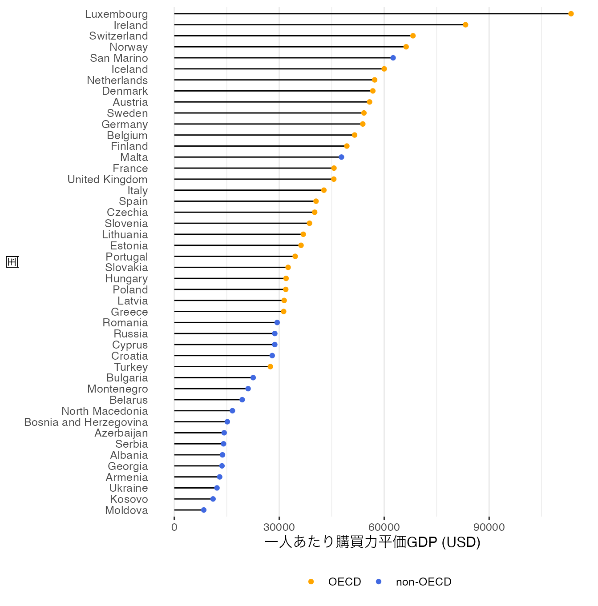
ファセット分割ももちろんできますが、この場合、OECD加盟国の一人当たりPPP GDPが相対的に高いことを示すなら、一つのファセットにまとめた方が良いでしょう。
以下のようにロリーポップを横に並べることもできますが、棒の数が多いケースがほとんどであるロリーポップチャートではラベルの回転が必要になるため、読みにくくなるかも知れません。
Country_df %>%
filter(Continent == "Europe") %>%
drop_na(PPP_per_capita) %>%
mutate(Country = fct_reorder(Country, PPP_per_capita),
Country = fct_rev(Country)) %>%
ggplot() +
geom_segment(aes(x = Country, xend = Country,
y = 0, yend = PPP_per_capita)) +
geom_point(aes(x = Country, y = PPP_per_capita), color = "orange") +
labs(x = "国", y = "一人あたり購買力平価GDP (USD)") +
theme_bw(base_family = "HiraKakuProN-W3",
base_size = 12) +
theme(panel.grid.major.y = element_blank(),
panel.border = element_blank(),
axis.ticks.y = element_blank(),
axis.text.x = element_text(angle = 90, vjust = 0.5, hjust = 1))20.7 平滑化ライン
2次元平面上に散布図をプロットし、二変数間の関係を一本の線で要約するのは平滑化ラインです。{ggplot2}ではgeom_smooth()幾何オブジェクトを重ねることで簡単に平滑化ラインをプロットすることができます。まずは、横軸をフリーダムハウス・スコア（FH_Total）、縦軸を一人当たり購買力平価GDP（PPP_per_capita）にした散布図を出力し、その上に平滑化ラインを追加してみましょう。geom_smooth()にもマッピングが必要で、aes()の内部にxとyをマッピングします。今回はgeom_point()とgeom_smooth()が同じマッピング情報を共有するため、ggplot()内部でマッピングします。
Country_df %>%
ggplot(aes(x = FH_Total, y = PPP_per_capita)) +
geom_point() +
geom_smooth() +
labs(x = "Freedom House Score", y = "PPP per capita (USD)") +
scale_y_continuous(breaks = seq(0, 120000, by = 10000),
labels = seq(0, 120000, by = 10000)) +
theme_minimal(base_size = 12)## `geom_smooth()` using method = 'loess' and formula 'y ~ x'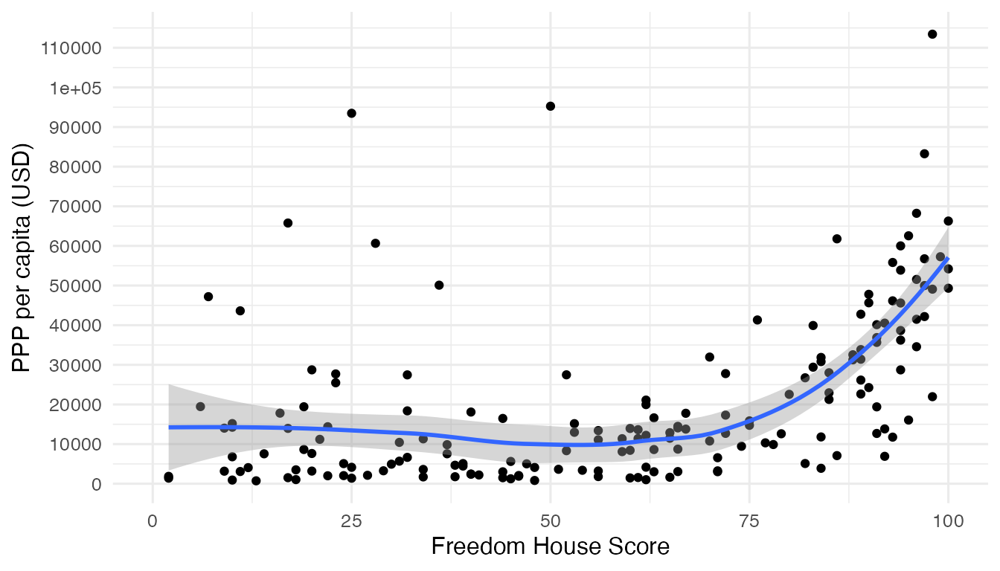
青い線が平滑化ライン、網掛けの領域が95%信頼区間です。この線はLOESS (LOcal Estimated Scatterplot Smoothing)と呼ばれる非線形平滑化ラインです。どのようなラインを引くかはmethod引数で指定しますが、このmethod既定値が"loess"です。これを見るとフリーダムハウス・スコアが75以下の国では国の自由度と所得間の関係があまり見られませんが、75からは正の関係が確認できます。
LOESS平滑化の場合、span引数を使って滑らかさを調整することができます。spanの既定値は0.75ですが、これが小さいほど散布図によりフィットしたラインが引かれ、よりギザギザな線になります。たとえば、spanを0.25にすると以下のようなグラフが得られます。
Country_df %>%
ggplot(aes(x = FH_Total, y = PPP_per_capita)) +
geom_point() +
geom_smooth(method = "loess", span = 0.25) +
labs(x = "Freedom House Score", y = "PPP per capita (USD)") +
scale_y_continuous(breaks = seq(0, 120000, by = 10000),
labels = seq(0, 120000, by = 10000)) +
theme_minimal(base_size = 12)## `geom_smooth()` using formula 'y ~ x'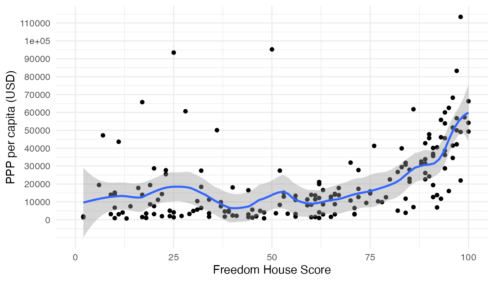
他にも定番の回帰直線を引くこともできます。methodの実引数を"lm"に変えるだけです。
Country_df %>%
ggplot(aes(x = FH_Total, y = PPP_per_capita)) +
geom_point() +
geom_smooth(method = "lm") +
labs(x = "Freedom House Score", y = "PPP per capita (USD)") +
scale_y_continuous(breaks = seq(0, 120000, by = 10000),
labels = seq(0, 120000, by = 10000)) +
theme_minimal(base_size = 12)## `geom_smooth()` using formula 'y ~ x'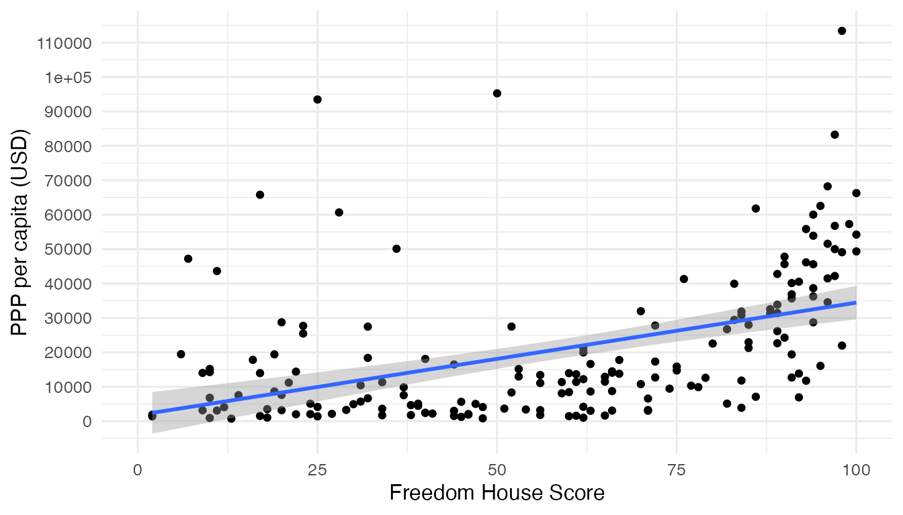
信頼区間は既定値だと95%信頼区間が表示されますが、level引数で調整することができます。たとえば、99.9%信頼区間を表示したい場合、level = 0.999を指定します。
Country_df %>%
ggplot(aes(x = FH_Total, y = PPP_per_capita)) +
geom_point() +
geom_smooth(method = "lm", level = 0.999) +
labs(x = "Freedom House Score", y = "PPP per capita (USD)") +
scale_y_continuous(breaks = seq(0, 120000, by = 10000),
labels = seq(0, 120000, by = 10000)) +
theme_minimal(base_size = 12)## `geom_smooth()` using formula 'y ~ x'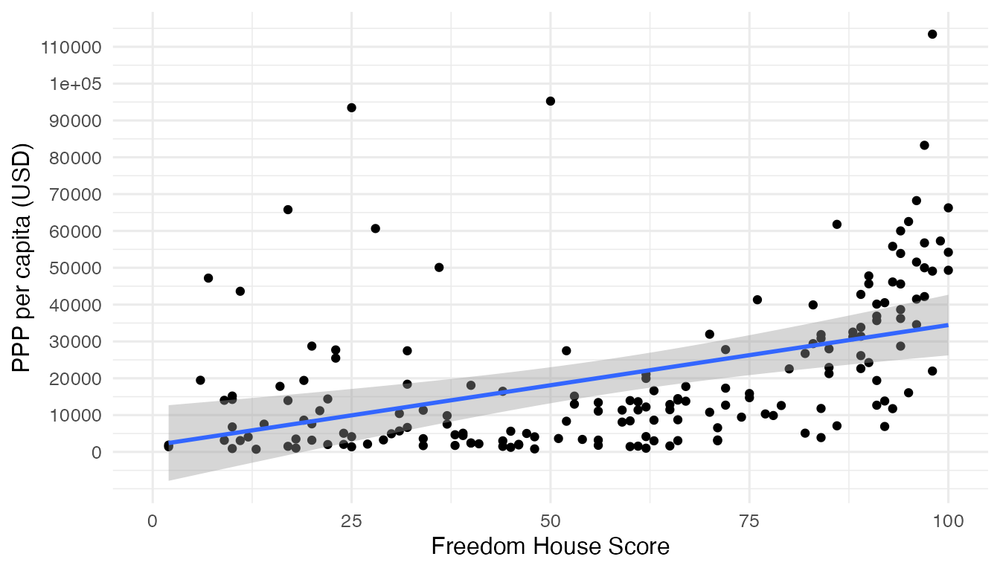
信頼区間を消したい場合はse = FALSEを指定します（既定値はTRUE）。
Country_df %>%
ggplot(aes(x = FH_Total, y = PPP_per_capita)) +
geom_point() +
geom_smooth(method = "lm", se = FALSE) +
labs(x = "Freedom House Score", y = "PPP per capita (USD)") +
scale_y_continuous(breaks = seq(0, 120000, by = 10000),
labels = seq(0, 120000, by = 10000)) +
theme_minimal(base_size = 12)## `geom_smooth()` using formula 'y ~ x'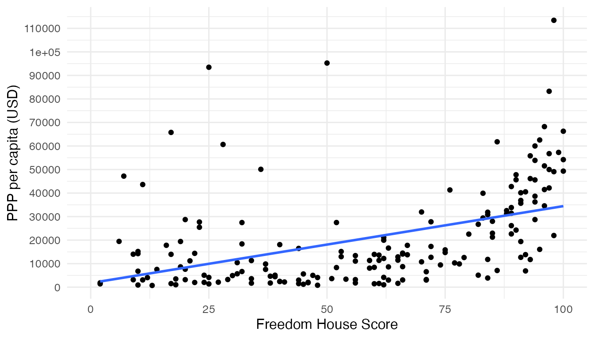
最後にデータのサブセットごとに回帰直線を引く方法について説明します。散布図で色分けを行う場合、aes()内でcolor引数を指定しますが、これだけで十分です。今回はこれまでの散布図をOECD加盟有無ごとに色分けし、それぞれ別の回帰直線を重ねてみましょう。回帰直線も色分けしたいのでcolor引数で次元を増やす必要があり、これはgeom_point()と共通であるため、ggplot()内でマッピングします。
Country_df %>%
mutate(OECD = if_else(OECD == 1, "加盟国", "非加盟国")) %>%
ggplot(aes(x = FH_Total, y = PPP_per_capita, color = OECD)) +
geom_point() +
geom_smooth(method = "lm") +
labs(x = "Freedom House Score", y = "PPP per capita (USD)") +
scale_y_continuous(breaks = seq(0, 120000, by = 10000),
labels = seq(0, 120000, by = 10000)) +
coord_cartesian(ylim = c(0, 120000)) +
theme_bw(base_family = "HiraKakuProN-W3",
base_size = 12)## `geom_smooth()` using formula 'y ~ x'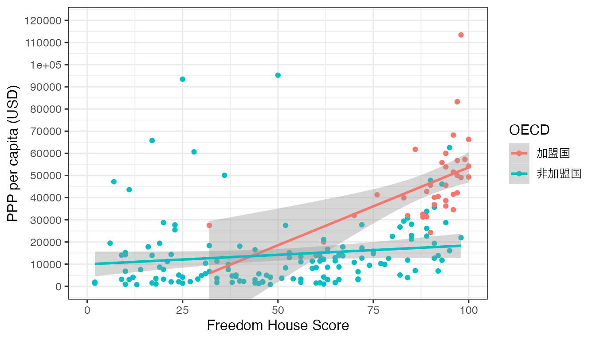
これを見ると、国の自由度と所得の間に関係が見られるのはOECD加盟国で、非加盟国では非常に関係が弱いことが分かります。
あまりいい方法ではないと思いますが、散布図は色（color）で分け、回帰直線は線の種類（linetype）で分けるならどうすれば良いでしょうか。この場合はcolorはgeom_point()内部で、linetypeはgeom_smooth()でマッピングします。
Country_df %>%
mutate(OECD = if_else(OECD == 1, "加盟国", "非加盟国")) %>%
ggplot(aes(x = FH_Total, y = PPP_per_capita)) +
geom_point(aes(color = OECD)) +
geom_smooth(aes(linetype = OECD), method = "lm", color = "black") +
labs(x = "Freedom House Score", y = "PPP per capita (USD)") +
scale_y_continuous(breaks = seq(0, 120000, by = 10000),
labels = seq(0, 120000, by = 10000)) +
coord_cartesian(ylim = c(0, 120000)) +
theme_bw(base_family = "HiraKakuProN-W3",
base_size = 12)## `geom_smooth()` using formula 'y ~ x'
{ggplot2}が提供する平滑化ラインにはLOESSと回帰直線以外にも"glm"や"gam"などがります。詳細はRコンソール上で?geom_smoothを入力し、ヘルプを参照してください。
20.8 ヒートマップ
20.8.1 2つの離散変数の分布を表すヒートマップ
ヒートマップ（heat map）には2つの使い方があります。まずは、離散変数\(\times\)離散変数の同時分布を示す時です。これは後ほど紹介するモザイク・プロットと目的は同じですが、モザイク・プロットはセルの面積で密度や度数を表すに対し、ヒートマップは主に色で密度や度数を表します。
ここでは一人当たり購買力平価GDP（PPP_per_capita）を「1万ドル未満」、「1万ドル以上・2万ドル未満」、「2万ドル以上、3万ドル未満」、「3万ドル以上」の離散変数に変換し、大陸ごとの国家数をヒートマップとして示してみたいと思います。まずは、変数のリコーディングをし、全てfactor化します。最後に国家名（Country）、大陸（Continent）、所得（Income）、フリーダム・ハウス・スコア（FH_Total）、人間開発指数（HDI_2018）列のみ抽出し、Heatmap_dfという名のオブジェクトとして格納しておきます。
Heatmap_df <- Country_df %>%
filter(!is.na(PPP_per_capita)) %>%
mutate(Continent = recode(Continent,
"Africa" = "アフリカ",
"America" = "アメリカ",
"Asia" = "アジア",
"Europe" = "ヨーロッパ",
.default = "オセアニア"),
Continent = factor(Continent, levels = c("アフリカ", "アメリカ", "アジア",
"ヨーロッパ", "オセアニア")),
Income = case_when(PPP_per_capita < 10000 ~ "1万ドル未満",
PPP_per_capita < 20000 ~ "1万ドル以上\n2万ドル未満",
PPP_per_capita < 30000 ~ "2万ドル以上\n3万ドル未満",
TRUE ~ "3万ドル以上"),
Income = factor(Income, levels = c("1万ドル未満", "1万ドル以上\n2万ドル未満",
"2万ドル以上\n3万ドル未満", "3万ドル以上"))) %>%
select(Country, Continent, Income, FH_Total, HDI_2018)
Heatmap_df## # A tibble: 178 × 5
## Country Continent Income FH_Total HDI_2018
## <chr> <fct> <fct> <dbl> <dbl>
## 1 Afghanistan アジア "1万ドル未満" 27 0.496
## 2 Albania ヨーロッパ "1万ドル以上\n2万ドル未満" 67 0.791
## 3 Algeria アフリカ "1万ドル以上\n2万ドル未満" 34 0.759
## 4 Angola アフリカ "1万ドル未満" 32 0.574
## 5 Antigua and Barbuda アメリカ "2万ドル以上\n3万ドル未満" 85 0.776
## 6 Argentina アメリカ "2万ドル以上\n3万ドル未満" 85 0.83
## 7 Armenia ヨーロッパ "1万ドル以上\n2万ドル未満" 53 0.76
## 8 Australia オセアニア "3万ドル以上" 97 0.938
## 9 Austria ヨーロッパ "3万ドル以上" 93 0.914
## 10 Azerbaijan ヨーロッパ "1万ドル以上\n2万ドル未満" 10 0.754
## # … with 168 more rows 次はgroup_by()とsummarise()を使って、各カテゴリーに属するケース数を計算し、Nという名の列として追加します。
Heatmap_df1 <- Heatmap_df %>%
group_by(Continent, Income) %>%
summarise(N = n(),
.groups = "drop")
Heatmap_df1## # A tibble: 18 × 3
## Continent Income N
## <fct> <fct> <int>
## 1 アフリカ "1万ドル未満" 41
## 2 アフリカ "1万ドル以上\n2万ドル未満" 9
## 3 アフリカ "2万ドル以上\n3万ドル未満" 2
## 4 アメリカ "1万ドル未満" 10
## 5 アメリカ "1万ドル以上\n2万ドル未満" 14
## 6 アメリカ "2万ドル以上\n3万ドル未満" 6
## 7 アメリカ "3万ドル以上" 5
## 8 アジア "1万ドル未満" 17
## 9 アジア "1万ドル以上\n2万ドル未満" 10
## 10 アジア "2万ドル以上\n3万ドル未満" 3
## 11 アジア "3万ドル以上" 11
## 12 ヨーロッパ "1万ドル未満" 1
## 13 ヨーロッパ "1万ドル以上\n2万ドル未満" 10
## 14 ヨーロッパ "2万ドル以上\n3万ドル未満" 7
## 15 ヨーロッパ "3万ドル以上" 28
## 16 オセアニア "1万ドル未満" 1
## 17 オセアニア "1万ドル以上\n2万ドル未満" 1
## 18 オセアニア "3万ドル以上" 2 これでデータの準備は終わりました。ヒートマップを作成する幾何オブジェクトはgeom_tile()です。同時分布を示したい変数を、それぞれxとyにマッピングし、密度、または度数を表す変数をfillにマッピングします。ここでは横軸を大陸（Continent）、縦軸を一人当たり購買力平価GDP（Income）とし、fillにはN変数をマッピングします。
Heatmap_df1 %>%
ggplot() +
geom_tile(aes(x = Continent, y = Income, fill = N)) +
labs(x = "大陸", y = "一人当たり購買力平価GDP（ドル）", fill = "国家数") +
theme_bw(base_family = "HiraKakuProN-W3",
base_size = 12) +
theme(panel.grid = element_blank()) # グリッドラインを消す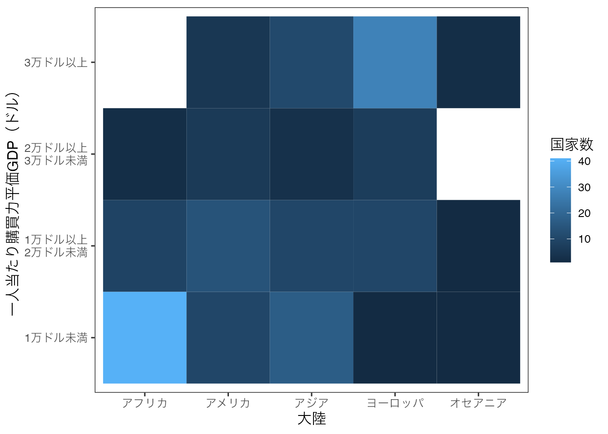
明るいほどカテゴリーに属するケースが多く、暗いほど少ないことを意味します。これを見ると世界で最も多くの割合を占めているのは、一人当たり購買力平価GDPが1万ドル未満のアフリカの国で、次は一人当たり購買力平価GDPが3万ドル以上のヨーロッパの国であることが分かります。欠損している（ケース数が0）セルは白の空白となります。
色をカスタマイズするにはscale_fill_gradient()です。これは第19章で紹介しましたscale_color_gradient()と使い方は同じです。scale_fill_gradient()は中間点なし、scale_fill_gradient2()は中間点ありの場合に使いますが、ここでは度数が小さい場合はcornsilk色を、大きい場合はbrown3色を使います。それぞれlowとhighに色を指定するだけです。
Heatmap_df1 %>%
ggplot() +
geom_tile(aes(x = Continent, y = Income, fill = N)) +
labs(x = "大陸", y = "一人当たり購買力平価GDP（ドル）", fill = "国家数") +
scale_fill_gradient(low = "cornsilk",
high = "brown3") +
theme_bw(base_family = "HiraKakuProN-W3",
base_size = 12) +
theme(panel.grid = element_blank()) # グリッドラインを消す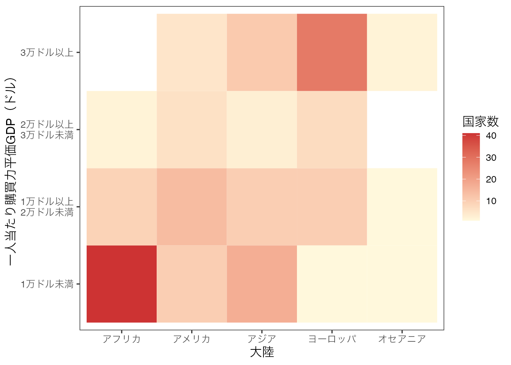
気のせいかも知れませんが、先ほどよりは読みやすくなったような気がしますね。
20.8.2 離散変数\(\times\)離散変数における連続変数の値を示すヒートマップ
次は、離散変数\(\times\)離散変数における連続変数の値を示すヒートマップを作ってみましょう。ヒートマップにおけるそれぞれのタイル（tile）は横軸上の位置と縦軸上の位置情報を持ち、これは前回と同様、離散変数でマッピングされます。そして、タイルの色は何らかの連続変数にマッピングされます。前回作成しましたヒートマップは度数、または密度であり、これも実は連続変数だったので、図の作り方は本質的には同じです。
ここでは大陸と所得ごとに人間開発指数の平均値を表すヒートマップを作ってみましょう。大陸（Continent）と所得（Income）でグループ化し、人間開発指数（HDI_2018）の平均値を計算したものをHeatmap_df2という名のオブジェクトとして格納します。
Heatmap_df2 <- Heatmap_df %>%
group_by(Continent, Income) %>%
summarise(HDI = mean(HDI_2018, na.rm = TRUE),
.groups = "drop")
Heatmap_df2## # A tibble: 18 × 3
## Continent Income HDI
## <fct> <fct> <dbl>
## 1 アフリカ "1万ドル未満" 0.510
## 2 アフリカ "1万ドル以上\n2万ドル未満" 0.697
## 3 アフリカ "2万ドル以上\n3万ドル未満" 0.798
## 4 アメリカ "1万ドル未満" 0.638
## 5 アメリカ "1万ドル以上\n2万ドル未満" 0.752
## 6 アメリカ "2万ドル以上\n3万ドル未満" 0.806
## 7 アメリカ "3万ドル以上" 0.841
## 8 アジア "1万ドル未満" 0.624
## 9 アジア "1万ドル以上\n2万ドル未満" 0.730
## 10 アジア "2万ドル以上\n3万ドル未満" 0.818
## 11 アジア "3万ドル以上" 0.872
## 12 ヨーロッパ "1万ドル未満" 0.711
## 13 ヨーロッパ "1万ドル以上\n2万ドル未満" 0.776
## 14 ヨーロッパ "2万ドル以上\n3万ドル未満" 0.827
## 15 ヨーロッパ "3万ドル以上" 0.902
## 16 オセアニア "1万ドル未満" 0.543
## 17 オセアニア "1万ドル以上\n2万ドル未満" 0.724
## 18 オセアニア "3万ドル以上" 0.930 作図の方法は前回と同じですが、今回はタイルの色塗り（fill）を人間開発指数の平均値（HDI）でマッピングする必要があります。他の箇所は同じコードでも良いですが、ここでは色塗りの際、中間点を指定してみましょう。たとえば人間開発指数が0.75なら色をcornsilk色とし、これより低いっほどcornflowerblue色に、高いほどbrown3色になるように指定します。中間点を持つグラデーション色塗りはscale_fill_gradient2()で調整することができます。使い方はscale_fill_gradient()とほぼ同じですが、中間点の色（mid）と中間点の値（midpoint）をさらに指定する必要があります。
Heatmap_df2 %>%
ggplot() +
geom_tile(aes(x = Continent, y = Income, fill = HDI)) +
labs(x = "大陸", y = "一人当たり購買力平価GDP（ドル）",
fill = "人間開発指数の平均値 (2018)") +
scale_fill_gradient2(low = "cornflowerblue",
mid = "cornsilk",
high = "brown3",
midpoint = 0.75) +
theme_bw(base_family = "HiraKakuProN-W3",
base_size = 12) +
theme(legend.position = "bottom",
panel.grid = element_blank())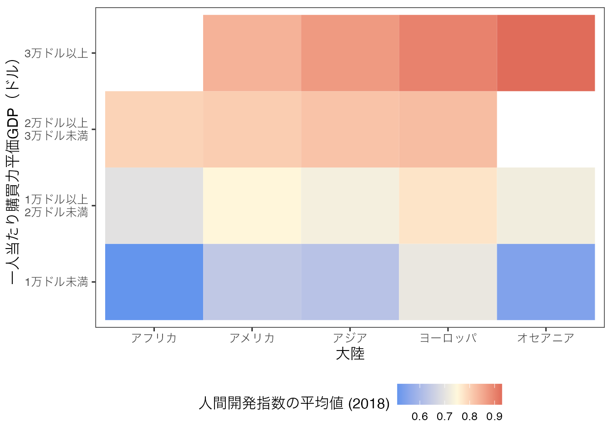
20.9 等高線図
連続変数\(\times\)連続変数の同時分布
Country_df %>%
ggplot(aes(x = FH_Total, y = HDI_2018)) +
geom_density_2d() +
labs(x = "フリーダム・ハウス・スコア", y = "人間開発指数 (2018)") +
theme_minimal(base_family = "HiraKakuProN-W3",
base_size = 12)Country_df %>%
ggplot(aes(x = FH_Total, y = HDI_2018)) +
geom_point() +
geom_density_2d() +
labs(x = "フリーダム・ハウス・スコア", y = "人間開発指数 (2018)") +
theme_minimal(base_family = "HiraKakuProN-W3",
base_size = 12)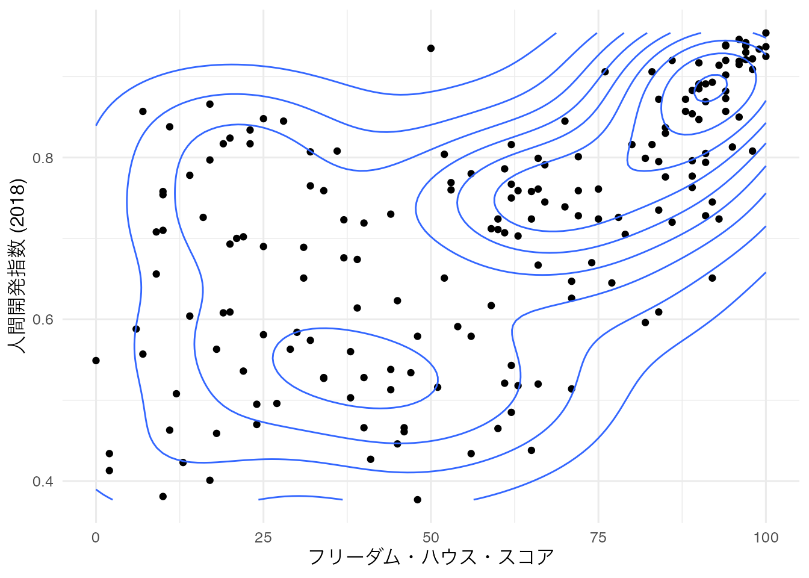
Country_df %>%
ggplot(aes(x = FH_Total, y = HDI_2018)) +
geom_density_2d_filled() +
labs(x = "フリーダム・ハウス・スコア", y = "人間開発指数 (2018)",
fill = "密度") +
theme_minimal(base_family = "HiraKakuProN-W3",
base_size = 12) geom_density_2d_filled()オブジェクトの後にgeom_density_2d()オブジェクトを重ねると、区間の区画線を追加することもできます。
Country_df %>%
ggplot(aes(x = FH_Total, y = HDI_2018)) +
geom_density_2d_filled() +
geom_density_2d(color = "black") +
labs(x = "フリーダム・ハウス・スコア", y = "人間開発指数 (2018)",
fill = "密度") +
theme_minimal(base_family = "HiraKakuProN-W3",
base_size = 12)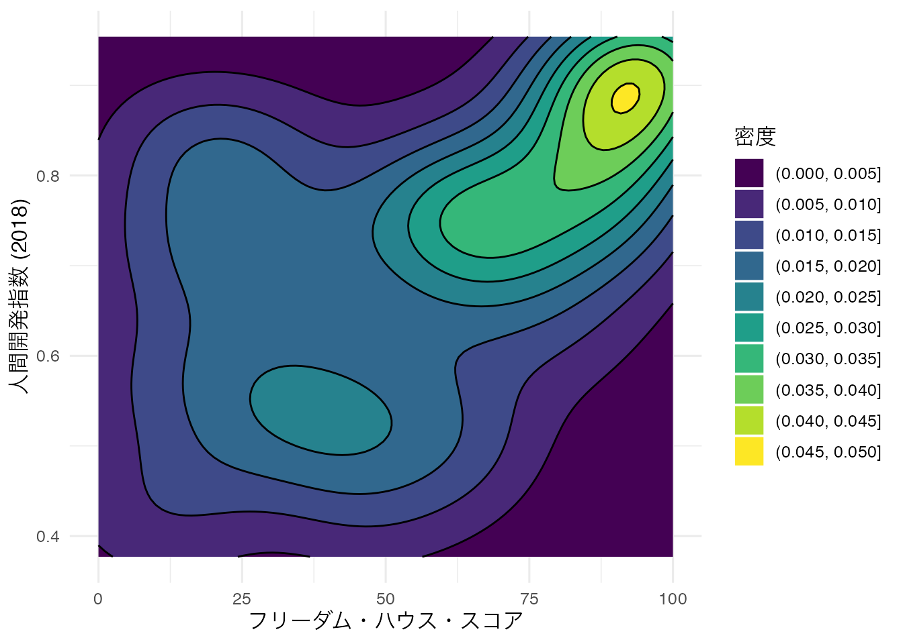
色が気に入らない場合、自分で調整することも可能です。scale_fill_manual()で各区間ごとの色を指定することもできませんが、あまり効率的ではありません。ここではscale_fill_brewer()関数を使って、ColorBrewerのパレットを使ってみましょう。引数なしでも使えますが、既定値のパレットは区間が9つまで対応します。今回の等高線図は全部で10区間ですので、あまり適切ではありません。ここでは11区間まで対応可能な"Spectral"パレットを使いますが、これはpalette引数で指定できます。
Country_df %>%
ggplot(aes(x = FH_Total, y = HDI_2018)) +
geom_density_2d_filled() +
scale_fill_brewer(palette = "Spectral") +
labs(x = "フリーダム・ハウス・スコア", y = "人間開発指数 (2018)",
fill = "密度") +
theme_minimal(base_family = "HiraKakuProN-W3",
base_size = 12)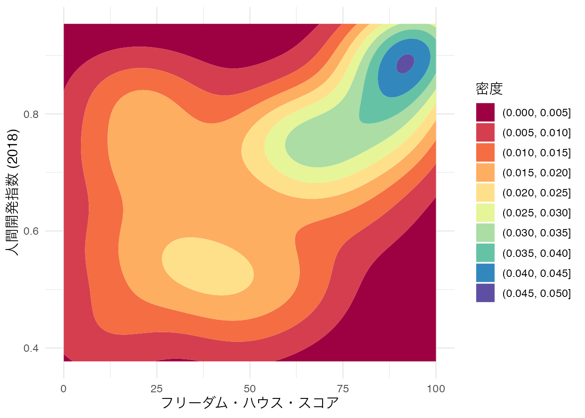
paletteで指定可能なカラーパレットの一覧は{RColorBrewer}のdisplay.brewer.all()関数で確認することが出来ます。各パレットが何区間まで対応できるかを見てから自分でパレットを作成することも可能ですが、詳細はネット上の各種記事を参照してください。
図 20.1: {RColorBrewer}が提供するパレート一覧
20.10 地図
20.10.1 世界地図
## [1] "sf" "data.frame"world_map %>%
ggplot() +
geom_sf(aes(fill = pop_est)) +
scale_fill_gradient(low = "cornflowerblue", high = "brown3") +
labs(fill = "人口") +
theme_minimal(base_family = "HiraKakuProN-W3") +
theme(legend.position = "bottom")
world_map %>%
ggplot() +
geom_sf(aes(fill = pop_est)) +
scale_fill_gradient(low = "cornflowerblue", high = "brown3") +
labs(fill = "人口") +
coord_sf(xlim = c(90, 150), ylim = c(10, 50)) +
theme_minimal(base_family = "HiraKakuProN-W3") +
theme(legend.position = "bottom")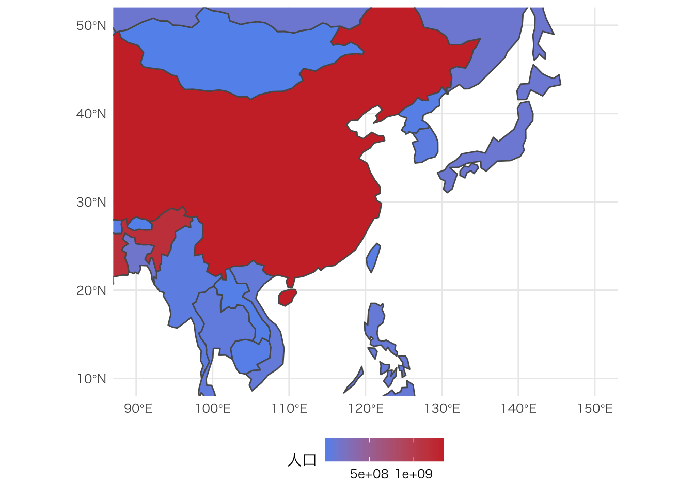
world_map2 <- ne_countries(scale = "medium", returnclass = "sf")
world_map2 %>%
mutate(Population = case_when(pop_est < 10000000 ~ "1千万未満",
pop_est < 50000000 ~ "5千万未満",
pop_est < 100000000 ~ "1億未満",
pop_est < 500000000 ~ "5億未満",
TRUE ~ "5億以上"),
Population = factor(Population,
levels = c("1千万未満", "5千万未満", "1億未満",
"5億未満", "5億以上"))) %>%
ggplot() +
geom_sf(aes(fill = Population)) +
scale_fill_brewer(palette = "Blues", drop = FALSE) +
labs(fill = "人口") +
coord_sf(xlim = c(90, 150), ylim = c(10, 50)) +
theme_minimal(base_family = "HiraKakuProN-W3") +
theme(legend.position = "bottom")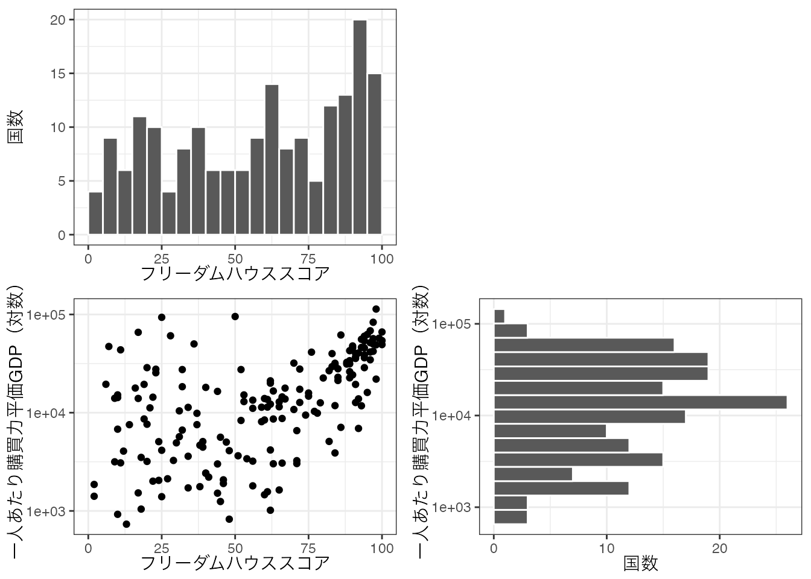
scale_fill_brewer()のpalette引数は{RColorBrewer}パッケージが提供するパレート名を指定します。パレート一覧はRColorBrewer::display.brewer.all()で確認可能であり、その例は本章の等高線図のパートにも掲載されています。自分で作成したパレートを使いたい場合はscale_fill_manual()を使用します。
20.10.2 日本地図（全体）
20.10.3 日本地図（特定の都道府県）
## This package provide map data is based on the Digital Map 25000 (Map
## Image) published by Geospatial Information Authority of Japan (Approval
## No.603FY2017 information usage <https://www.gsi.go.jp>)## [1] "sf" "tbl_df" "tbl" "data.frame"## Simple feature collection with 6 features and 4 fields
## Geometry type: MULTIPOLYGON
## Dimension: XY
## Bounding box: xmin: 135.3435 ymin: 34.61718 xmax: 135.5409 ymax: 34.73348
## Geodetic CRS: WGS 84
## # A tibble: 6 × 5
## pref_code prefecture city_code city geometry
## <chr> <chr> <chr> <chr> <MULTIPOLYGON [°]>
## 1 27 大阪府 27102 大阪市 都島区 (((135.519 34.7188, 135.5214 34.…
## 2 27 大阪府 27103 大阪市 福島区 (((135.468 34.68569, 135.472 34.…
## 3 27 大阪府 27104 大阪市 此花区 (((135.3587 34.62756, 135.3533 3…
## 4 27 大阪府 27106 大阪市 西区 (((135.4743 34.66666, 135.4865 3…
## 5 27 大阪府 27107 大阪市 港区 (((135.4332 34.64913, 135.4376 3…
## 6 27 大阪府 27108 大阪市 大正区 (((135.447 34.64124, 135.4482 34…20.11 非巡回有向グラフ
近年、因果推論の界隈でよく登場する非巡回有向グラフ（DAG）ですが、「グラフ」からも分かるように、DAGの考え方に基づく因果推論の研究には多くの図が登場します。DAGを作図するには{ggplot2}のみでも可能ですが、{dagitty}パッケージでDAGの情報を含むオブジェクトを生成し、{ggdag}で作図した方が簡単です。以下の図はDAGの一例です。
##
## The downloaded binary packages are in
## /var/folders/0_/nqp94zq944z95snvmg88g38c0000gn/T//RtmphUxbGx/downloaded_packages##
## dagitty installed## also installing the dependencies 'graphlayouts', 'ggraph', 'tidygraph'##
## The downloaded binary packages are in
## /var/folders/0_/nqp94zq944z95snvmg88g38c0000gn/T//RtmphUxbGx/downloaded_packages##
## ggdag installed
ここでX、Y、Zはノード（node）と呼ばれ、それぞれのノードをつなぐ線のことをエッジ（edge）と呼びます。また、これらのエッジには方向があります（有向）。簡単に言うと原因と結果といった関係ですが、DAGを描く際は、各ノード間の関係を記述する必要があります。
それではまず、以上の図を作ってみましょう。最初のステップとして{dagitty}と{ggdag}をインストールし、読み込みましょう。
つづいて、DAGの情報を含むオブジェクトを作成します。使用する関数はdagify()であり、ここには結果 ~ 原因の形で各ノード間の関係を記述します。先ほどの図ではXはYの原因（X ~ Y）、ZはXとYの原因（X ~ ZとY ~ Z）です。これらの情報をdagify()内で指定します。
## dag {
## X [exposure]
## Y [outcome]
## Z
## X -> Y
## Z -> X
## Z -> Y
## }Y ~ XとY ~ ZはY ~ X + Zとまとめることも可能です。これは「Yの原因はXとZである」という意味であり、「Yの原因はXであり、Yの原因はZである」と同じ意味です。また、DAGを作図する際、dagify()内にexposureとoutcomeは不要ですが、もしadjustmentSets()関数などを使って統制変数を特定したい場合は処置変数（exposure）と応答変数（outcome）にそれぞれ変数名を指定します。ちなみに、以上のコードは以下のように書くことも可能です。
## dag {
## X [exposure]
## Y [outcome]
## Z
## X -> Y
## Z -> X
## Z -> Y
## }格納されたDAG_data1オブジェクトのクラスは"dagitty"です。"dagitty"の可視化には{ggdag}のggdag()を使用します。

DAGにおいて背景、軸の目盛り、ラベルは不要ですので、theme_dag_blank()テーマを指定して全て除去します。

20.11.1 ノードの位置を指定する
読者の多くは以上のグラフと異なるものが得られたかも知れません。ノード間の関係は同じはずですが、ノードの位置が異なるでしょう。また、同じコードを実行する度にノードの位置は変わります。以下ではノードの位置を固定する方法について紹介します。位置を指定するにはdagify()内でcoords引数に各ノードの情報が格納されたリスト型オブジェクトを指定する必要があります。リストの長さは2であり、それぞれの名前はxとyです。そしてリストの各要素にはベクトルが入ります。たとえば、ノードXの位置を (1, 1)、Yの位置を (3, 1)、Zの位置を (2, 2)に指定してみましょう。dagify()内で直接リストを書くことも可能ですが、コードの可読性が落ちるため、別途のオブジェクト（DAG_Pos2）として格納しておきます。
続いて、dagify()内でcoords引数を追加し、ノードの位置情報が格納されているDAG_Pos2を指定します。
## dag {
## X [exposure,pos="1.000,1.000"]
## Y [outcome,pos="3.000,1.000"]
## Z [pos="2.000,2.000"]
## X -> Y
## Z -> X
## Z -> Y
## }可視化の方法は同じです。
以上の使い方だけでも、ほとんどのDAGは描けるでしょう。また、ノードを若干オシャレ（?）にするには、ggdag()内でstylized = TRUEを指定します。
DAG_Pos3 <- list(x = c(X1 = 3, X2 = 3, X3 = 1, T = 2, Y = 4),
y = c(X1 = 1, X2 = 2, X3 = 2, T = 3, Y = 3))
DAG_data3 <- dagify(Y ~ T + X1 + X2,
T ~ X3,
X2 ~ T +X1 + X3,
exposure = "T",
outcome = "Y",
coords = DAG_Pos3)
DAG_data3 %>%
ggdag(stylized = TRUE) +
theme_dag_blank()可視化の話ではありませんが、adjustmentSets()関数を用いると、処置変数Tの総効果（total effect）を推定するためにはどの変数を統制（調整）する必要があるかを調べることも可能です。
## { X3 }X3変数のみ統制すれば良いという結果が得られました。また、TからYへの直接効果（direct effect）の場合、effect = "direct"を指定します。
## { X1, X2 }X1とX2を統制する必要があることが分かりますね。
20.12 バンプチャート
バンプチャート (bump chart)は順位の変化などを示す時に有効なグラフです。たとえば、G7構成国の新型コロナ感染者数の順位の変化を示すにはどうすれば良いでしょうか。そもそもどのような形式のデータが必要でしょうか。まずは必要なデータ形式を紹介したいと思います。
まず、{ggplot2}によるバンプチャートの作成を支援する{ggbump}パッケージをインストールし、読み込みましょう90。
ここではG7構成国の100万人当り新型コロナ感染者数の順位がどのように変化したのかを2020年4月から7月まで1ヶ月単位で表したデータが必要です。データは以下のようなコードで作成しますが、本書のサポートページからもダウンロード可能です。
Bump_df <- left_join(COVID19_df, Country_df, by = "Country") %>%
select(Country, Date, Population, Confirmed_Total, G7) %>%
separate(Date, into = c("Year", "Month", "Day"), sep = "/") %>%
mutate(Month = as.numeric(Month)) %>%
filter(Month >= 4, G7 == 1) %>%
group_by(Country, Month) %>%
summarise(Population = mean(Population),
New_Cases = sum(Confirmed_Total, na.rm = TRUE),
New_Cases_per_million = New_Cases / Population * 1000000,
.groups = "drop") %>%
select(Country, Month, New_Cases_per_million)Bump_df <- Bump_df %>%
group_by(Month) %>%
mutate(Rank = rank(New_Cases_per_million, ties.method = "random")) %>%
ungroup() %>%
select(Country, Month, Rank, New_Cases_per_million) 必要なデータは以下のような形式です。ちなみにバンプチャートを作成するためには最後のNew_Cases_per_million列 (100万人当り新型コロナ感染者数)は不要です。つまり、国名、月、順位のみで十分です。
# 以上のコードを省略し、加工済みのデータを読み込んでもOK
# Bump_df <- read_csv("Data/Bumpchart.csv")
Bump_df それでは{ggbump}が提供するgeom_bump()幾何オブジェクトを使用し、簡単なバンプチャートを作成してみましょう。必要なマッピング要素はxとy、colorです。xには時間を表す変数であるMonthを、yには順位を表すRankをマッピングします。また、7本の線が出るため、月と順位、それぞれの値がどの国の値かを特定する必要があります。groupsに国名であるCountryをマッピングしても線は引けますが、どの線がどの国かが分からなくなるため、colorにCountryをマッピングし、線の色分けをします。
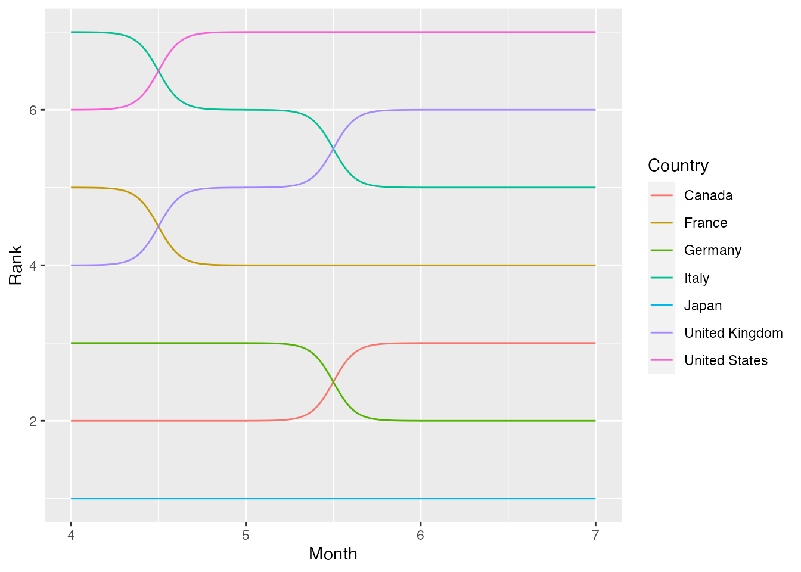
これで最低限のバンプチャートはできましたが、もう少し見やすく、可愛くしてみましょう。今は線が細いのでややぶ厚めにします。これはgeom_bump()レイヤーのsize引数で指定可能です。また、各月に点を付けることによって、同時期における順位の比較をよりしやすくしてみましょう。これは散布図と同じであるため、geom_point()幾何オブジェクトを使用します。
Bump_df %>%
ggplot(aes(x = Month, y = Rank, color = Country)) +
geom_point(size = 7) +
geom_bump(size = 2) +
theme_minimal(base_size = 14)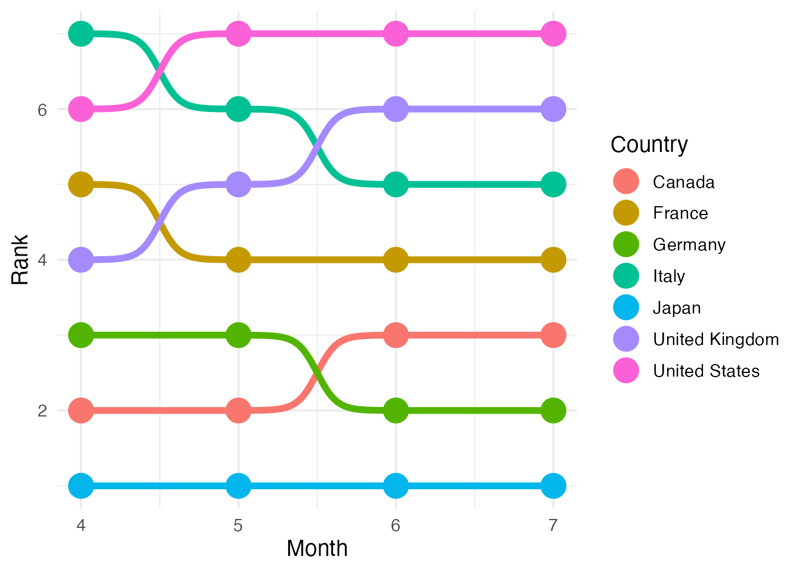
7月時点におけるRankの値に応じてCountryをfactor化する。
Bump_df %>%
mutate(Country = fct_reorder2(Country, Month, Rank, last2)) %>%
ggplot(aes(x = Month, y = Rank, color = Country)) +
geom_point(size = 7) +
geom_bump(size = 2) +
theme_minimal(base_size = 14)
凡例を無くし、線の両側に国名を入れる。グリッドも不要なので除去
Bump_df %>%
ggplot(aes(x = Month, y = Rank, color = Country)) +
geom_point(size = 7) +
geom_bump(size = 2) +
geom_text(data = filter(Bump_df, Month == min(Month)),
aes(x = Month - 0.15, label = Country), hjust = 1) +
geom_text(data = filter(Bump_df, Month == max(Month)),
aes(x = Month + 0.15, label = Country), hjust = 0) +
coord_cartesian(xlim = c(3, 8)) +
scale_x_continuous(breaks = 4:7, labels = 4:7) +
scale_y_continuous(breaks = 1:7, labels = 7:1) +
labs(y = "Rank", x = "Month") +
theme_minimal(base_size = 14) +
theme(legend.position = "none",
panel.grid = element_blank())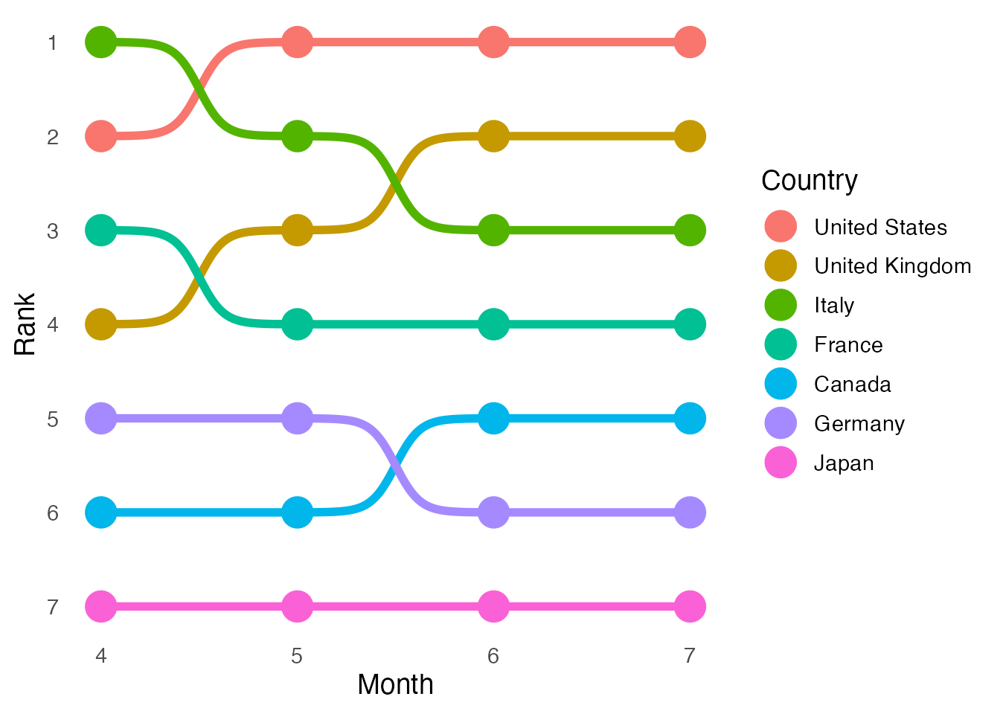
20.13 沖積図
沖積図 (alluvial plot)は同じ対象を複数回観察したデータ（パネル・データなど）から変化を示すことに適したグラフです。たとえば、同じ回答者を対象に2回世論調査を実施し、1回目調査時の支持政党と2回目調査時の支持政党を変化を見ることも可能です。もし、変化が大きい場合は政党支持態度は弱いこととなりますし、変化が小さい場合は安定していると解釈できるでしょう。
ここでは2009年の衆院選と2010年の参院選における投票先の変化を沖積図で確認してみたいと思います。まずは、沖積図の作成に特化した{ggalluvial}パッケージをインストールし、読み込みます。
続きまして、実習用データを読み込みます。データは 中澤 (2014) の表3を元に筆者 (宋)が作成したものです。
Vote_0910| 変数名 | 説明 |
|---|---|
ID |
回答者ID |
Vote09 |
2009年衆院選における投票先 |
Vote10 |
2010年参院選における投票先 |
たとえば、1番目の回答者は2009年に棄権し、2010年も棄権したことを意味する。また、5番目の回答者は2009年に自民党に投票し、2010年は共産党または社民党に投票したことを意味する。続いて、このデータを{ggalluvial}に適した形式のデータに加工します。具体的には「2009年棄権、かつ2010年棄権」、「2009年棄権、かつ2010年自民党投票」、…、「2009年民主党投票、かつ2010年自民党投票」のように全ての組み合わせに対し、該当するケース数を計算する必要があります。今回のデータだと、投票先はいずれも自民、民主、公明、共産・社民、その他、棄権、DK (わからない)の7であるため、49パターンができます。それぞれのパターンに該当するケース数を計算するためにはVote09とVote10でデータをグループ化し、ケース数を計算します。
Vote_0910 <- Vote_0910 %>%
group_by(Vote09, Vote10) %>%
summarise(Freq = n(),
.groups = "drop")
Vote_0910## # A tibble: 47 × 3
## Vote09 Vote10 Freq
## <chr> <chr> <int>
## 1 DK DK 111
## 2 DK その他 8
## 3 DK 公明 7
## 4 DK 共産・社民 15
## 5 DK 棄権 57
## 6 DK 民主 116
## 7 DK 自民 29
## 8 その他 DK 18
## 9 その他 その他 73
## 10 その他 公明 4
## # … with 37 more rows2009年の調査で「わからない」と回答し、2010年の調査でも「わからない」と回答した回答者数は111名、2009年の調査で「わからない」と回答し、2010年の調査では「棄権」と回答した回答者数は8名、…といったことが分かりますね。
続いて、グラフを作成する前に投票先変数 (Vote09とVote10)をfactor化します。可視化の際、投票先が出力される順番に決まりはありませんが、自民、民主、公明、…、DKの順が自然かと思います。むろん、こちらは自分から見て分かりやいように順番を決めましょう。ただし、2変数における水準 (level)の順番は一致させた方が良いでしょう。
Vote_0910 <- Vote_0910 %>%
mutate(Vote09 = factor(Vote09, levels = c("自民", "民主", "公明", "共産・社民",
"その他", "棄権", "DK")),
Vote10 = factor(Vote10, levels = c("自民", "民主", "公明", "共産・社民",
"その他", "棄権", "DK"))) それでは沖積図を描いてみましょう。使用する幾何オブジェクトはgeom_alluvium()とgeom_stratum()です。必ずこの順番でレイヤーを重ねてください。マッピングはy、axis1、axis2に対し、yには当該パターン内のケース数 (Freq)、axis1は2009年の投票先 (Vote09)、axis2は2010年の投票先 (Vote10)を指定します91。これらのマッピングはgeom_stratum()とgeom_alluvim()共通であるため、ggplot()内でマッピングした方が効率的です。
Vote_0910 %>%
ggplot(aes(y = Freq, axis1 = Vote09, axis2 = Vote10)) +
geom_alluvium() +
geom_stratum()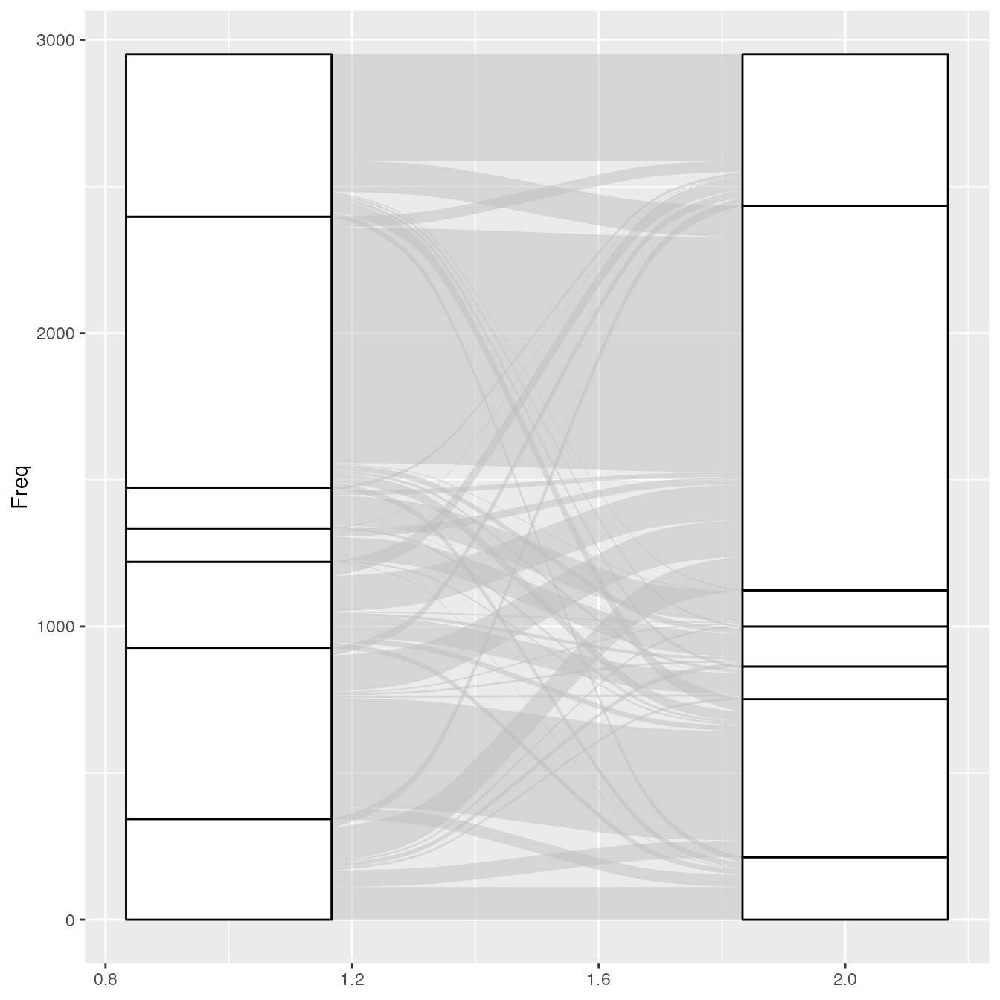
何かの図は出てきましたが、これだけだと、それぞれの四角形がどの政党を示しているのかが分かりませんね。四角形内に政党名を出力するためには{ggplot2}内蔵のgeom_text()を使用します。マッピング要素はggplot()内でマッピングしたものに加え、labelが必要ですが、ここではafter_stat(stratum)を指定します。そして、aes()のその側にstat = "stratum"を指定するだけです。フォントの指定が必要な場合はfamilyを使います。theme_*()内でbase_familyを指定した場合でも必要です。
Vote_0910 %>%
ggplot(aes(y = Freq, axis1 = Vote09, axis2 = Vote10)) +
geom_alluvium() +
geom_stratum() +
geom_text(aes(label = after_stat(stratum)),
stat = "stratum", family = "HiraginoSans-W3")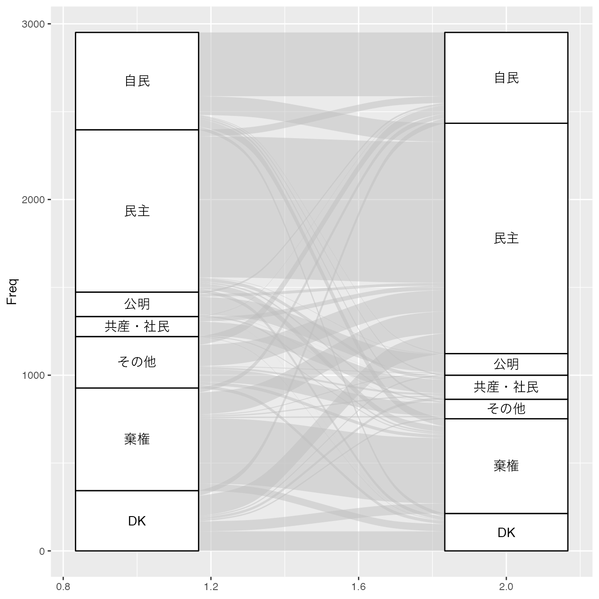
これで沖積図はとりあえず完成ですが、少し読みやすく加工してみましょう。たとえば、2010年に民主党に投票した回答者において2009年の投票先の割合を見たいとした場合、geom_alluvium()内にfill = Vote09をマッピングします。これで帯に2009年の投票先ごとの色付けができます。
Vote_0910 %>%
ggplot(aes(y = Freq, axis1 = Vote09, axis2 = Vote10)) +
geom_alluvium(aes(fill = Vote09)) +
geom_stratum() +
geom_text(aes(label = after_stat(stratum)),
stat = "stratum", family = "HiraginoSans-W3")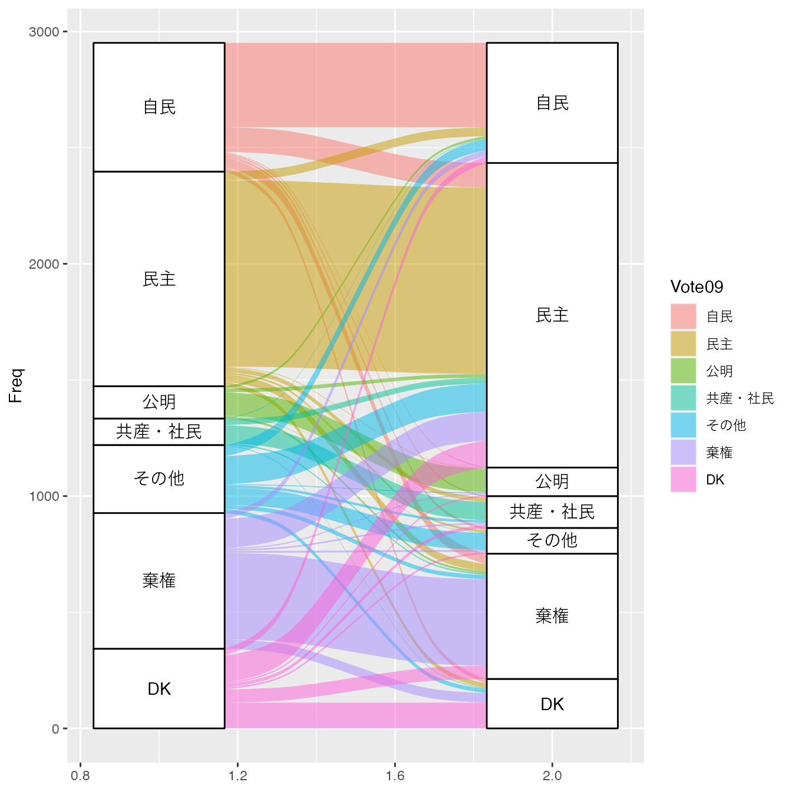
fill = Vote10とマッピングした場合は、感覚が変わります。実際にやってみましょう。
Alluvial_Plot <- Vote_0910 %>%
ggplot(aes(y = Freq, axis1 = Vote09, axis2 = Vote10)) +
geom_alluvium(aes(fill = Vote10)) +
geom_stratum() +
geom_text(aes(label = after_stat(stratum)),
stat = "stratum", family = "HiraginoSans-W3")
Alluvial_Plot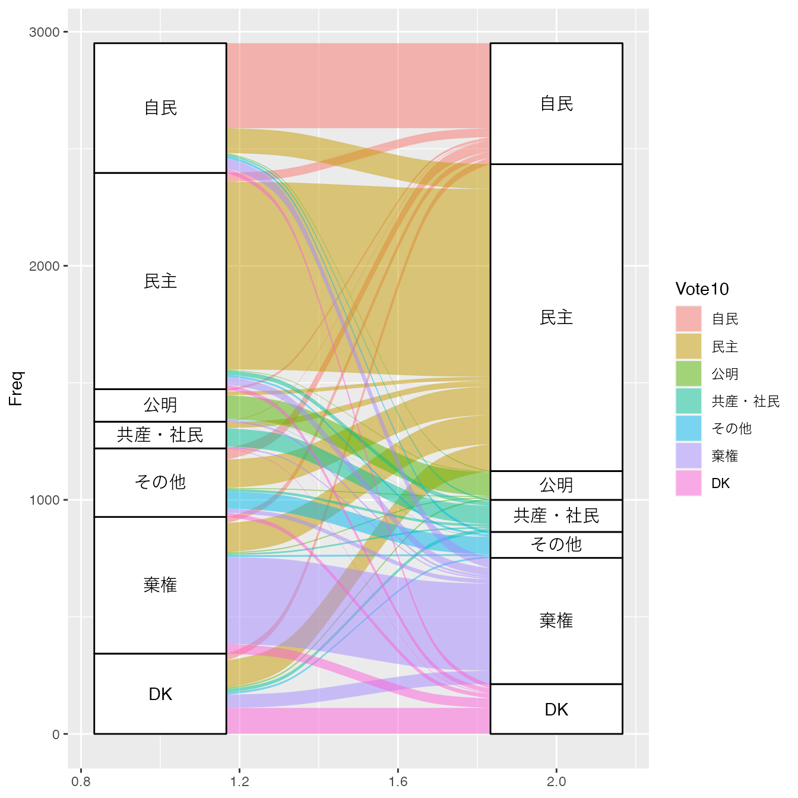
この場合、2009年に民主党に投票した人が2010年にどこに流れたかが分かりやすくなります。Vote09に色分けするか、Vote10に色分けするかは作成する人が決める問題であり、自分の主張・メッセージに適したマッピングをしましょう。
最後に、図をもう少し加工してみましょう。まず、横軸に0.8、1.2、1.6、2.0となっている目盛りを修正し、1と2の箇所に「2009年衆院選」と「2010年参院選」を出力します。これはscale_x_continuous()で調整可能です。そして、theme_minimal()で余計なものを排除したテーマを適用します。最後にtheme()内で全ての凡例を削除 (legend.position = "none")し、パネルのグリッド (panel.grid)と縦軸・横軸のタイトル (axis.title)、縦軸の目盛りラベル (axis.text.y)を削除 (element_blank())します。
Alluvial_Plot +
scale_x_continuous(breaks = 1:2,
labels = c("2009年衆院選", "2010年参院選")) +
theme_minimal(base_family = "HiraginoSans-W3",
base_size = 16) +
theme(legend.position = "none",
panel.grid = element_blank(),
axis.title = element_blank(),
axis.text.y = element_blank())
これでだいぶスッキリした沖積図が出来上がりました。
20.14 ツリーマップ
ツリーマップ（tree map）は変数の値の大きさを長方形の面積として表すグラフです。全体におけるシェアを示す時に使う点で、円グラフの代替案の一つになります。円グラフは項目が多すぎると読みにくいデメリットがありますが、ツリーマップは項目が多い場合でも有効です。むろん、多すぎると読みにくいことは同じですので、注意が必要です。
ツリーマップを作成するためには{treemapify}パッケージのgeom_treemap()幾何オブジェクトを使用します。まず、{treemapify}をインストールし、読み込みます。
ここではCountry_dfからアジア諸国の人口（Population）をツリーマップをして可視化したいと思います。geom_treemap()の場合、各長方形は面積の情報のみを持ちます。この面積の情報をareaにマッピングします。
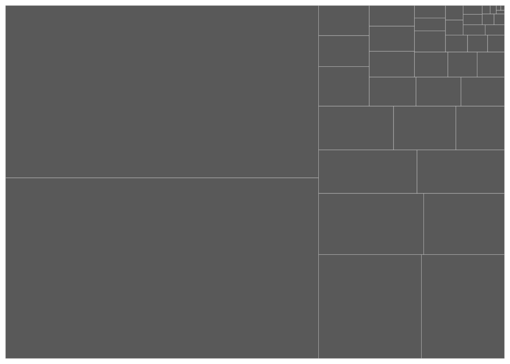
これだけだと各長方形がどの国を指しているのかが分かりませんね。長方形の上に国名（Country）を追加するためにはgeom_treemap_text()幾何オブジェクトを使用します。マッピングはareaとlabelに対し、それぞれ面積を表すPopulationと国名を表すCountryを指定します。areaはgeom_treemap()とgeom_treemap_text()両方で使われるのでggplot()の内部でマッピングしても問題ありません92。また、aes()の外側にcolor = "white"で文字を白に指定し、place = "center"で長方形の真ん中にラベルが付くようにします。
Country_df %>%
filter(Continent == "Asia") %>%
ggplot(aes(area = Population)) +
geom_treemap() +
geom_treemap_text(aes(label = Country), color = "white", place = "center")
これでツリーマップが完成しました。インドと中国の存在感がかなり大きいですね。更にラベルのサイズを長方形に合わせると、その存在感をより高めることができます。ラベルの大きさを長方形に合わせるにはgeom_treepmap_text()の内部にgrow = TRUEを指定します。
Country_df %>%
filter(Continent == "Asia") %>%
ggplot(aes(area = Population, label = Country)) +
geom_treemap() +
geom_treemap_text(color = "white", place = "center",
grow = TRUE) ここで更に次元を追加するために、色塗りをしてみましょう。たとえば、G20加盟国か否かで色分けをしたい場合、fillにG20をマッピングします。ただし、今のままだとG20は連続変数扱いになりますので、character型、またはfactor型に変換します。
Country_df %>%
mutate(G20 = if_else(G20 == 1, "Member", "Non-member")) %>%
filter(Continent == "Asia") %>%
ggplot(aes(area = Population, fill = G20,
label = Country)) +
geom_treemap() +
geom_treemap_text(color = "white", place = "centre",
grow = TRUE) +
labs(fill = "G20") +
ggtitle("Population in Asia") +
theme(legend.position = "bottom") 色塗りは連続変数に対して行うことも可能です。ここでは2018年人間開発指数（HDI_2108）の値に応じて色塗りをしてみます。また、HDI_2018が低い（low）とbrown3、高い（high）とcornflowerblue色にします。真ん中の値（midpoint）は0.7とし、色（mid）はcornsilkを使います。
連続変数でマッピングされた色塗り（fill）の調整にはscale_fill_gradient()、またはscale_fill_gradient2()を使います。前者は中間点なし、後者は中間点ありです。これらの使い方は第19章で紹介しましたscale_color_gradient()と同じです。
Country_df %>%
filter(Continent == "Asia") %>%
ggplot(aes(area = Population, fill = HDI_2018,
label = Country)) +
geom_treemap() +
geom_treemap_text(color = "white", place = "centre",
grow = TRUE) +
scale_fill_gradient2(low = "brown3",
mid = "cornsilk",
high = "cornflowerblue",
midpoint = 0.7) +
labs(fill = "UN Human Development Index (2018)") +
ggtitle("Population in Asia") +
theme(legend.position = "bottom")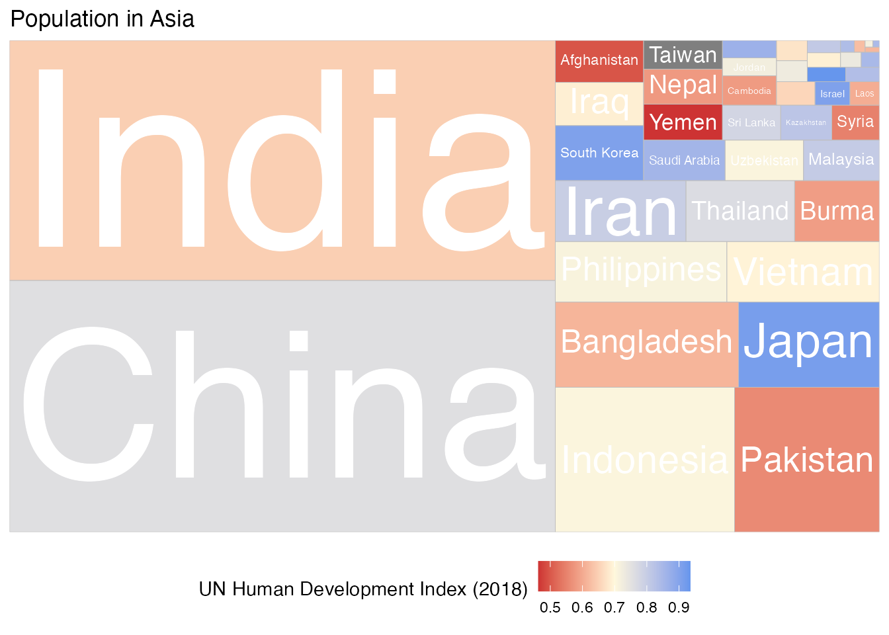
ちなみに以上の図を円グラフにすると以下のようになります（国名は人口の割合が2.5%を超える国のみ表示）。ツリーマップと比較してかなり読みにくいことが分かります。
Country_df %>%
filter(Continent == "Asia") %>%
arrange(Population) %>%
mutate(Prop = Population / sum(Population) * 100,
LabelY = 100 - (cumsum(Prop) - 0.5 * Prop),
CountryName = if_else(Prop < 2.5, "", Country),
Country = fct_inorder(Country)) %>%
ggplot() +
geom_bar(aes(x = 1, y = Prop, group = Country, fill = HDI_2018),
color = "black", stat = "identity", width = 1) +
geom_text(aes(x = 1, y = LabelY, label = CountryName)) +
coord_polar("y", start = 0) +
scale_fill_gradient2(low = "brown3",
mid = "cornsilk",
high = "cornflowerblue",
midpoint = 0.7) +
labs(fill = "UN Human Development Index (2018)") +
ggtitle("Population in Asia") +
theme_minimal() +
theme(legend.position = "bottom",
panel.grid = element_blank(),
axis.title = element_blank(),
axis.text = element_blank())ただし、ツリーマップが必ずしも円グラフより優れているとは言えません。たとえば、 Heer and Bostock (2010) の研究では円グラフとツリーマップを含む9種類のグラフを用い、被験者に大小関係を判断してもらう実験を行いましたが、ツリーマップ（四角形の面積）は円グラフ（角度）よりも判断までの所要時間が長いことが述べています。
20.15 モザイクプロット
モザイクプロットは2つの離散変数（おもに名目変数）の関係を可視化するために Hartigan and Kleiner (1984) が考案した図です。2つの名目変数間の関係を見る際によく使われるものはクロス表（クロス集計表）でしょう。
Mosaic_df <- Country_df %>%
select(Country, Continent, Polity = Polity_Type, PPP = PPP_per_capita) %>%
mutate(Continent = factor(Continent,
levels = c("Africa", "America", "Asia",
"Europe", "Oceania")),
Polity = factor(Polity,
levels = c("Autocracy", "Closed Anocracy",
"Open Anocracy", "Democracy",
"Full Democracy")),
PPP = if_else(PPP >= 15000, "High PPP", "Low PPP"),
PPP = factor(PPP, levels = c("Low PPP", "High PPP"))) %>%
drop_na()## # A tibble: 6 × 4
## Country Continent Polity PPP
## <chr> <fct> <fct> <fct>
## 1 Afghanistan Asia Closed Anocracy Low PPP
## 2 Albania Europe Democracy Low PPP
## 3 Algeria Africa Open Anocracy Low PPP
## 4 Angola Africa Closed Anocracy Low PPP
## 5 Argentina America Democracy High PPP
## 6 Armenia Europe Democracy Low PPP クロス表を作成する内蔵関数としてはtable()があります。2つの変数が必要となり、第一引数が行、第二引数が列を表します。
##
## Autocracy Closed Anocracy Open Anocracy Democracy Full Democracy
## Africa 3 14 11 18 1
## America 0 1 4 16 5
## Asia 13 6 0 15 3
## Europe 2 1 2 16 20
## Oceania 0 0 2 0 2 このMosaic_Tabのクラスは"table"ですが、"table"クラスのオブジェクトをplot()に渡すと別途のパッケージを使わずモザイクプロットを作成することができます。
やや地味ではありますが、モザイクプロットが出来ました。ここからはより読みやすいモザイクプロットを作成するために{ggmosaic}パッケージのgeom_mosaic()関数を使います。
geom_mosaic()の場合、xのみのマッピングで十分です。ただし、特定の変数を指定するのではなく、product(変数1, 変数2)をxにマッピングする必要があります。table()関数同様、変数1は行、変数2は列です。また、欠損値が含まれている行がある場合は、aes()の外側にna.rm = TRUEを指定する必要があります。今回はdrop_na()で欠損値をすべて除外しましたが、念の為に指定しておきます。
Mosaic_df %>%
ggplot() +
geom_mosaic(aes(x = product(Polity, Continent)), na.rm = TRUE) +
labs(x = "Continent", y = "Polity Type") +
theme_minimal() +
theme(panel.grid = element_blank()) これで出来上がりですが、"table"オブジェクトをplot()に渡した結果とあまり変わらないですね。続いて、この図を少し改良してみましょう。まずはセルの色分けですが、これはfillに色分けする変数をマッピングするだけです。今回は政治体制ごとにセルを色分けしましょう。また、文字を大きめにし、横軸の目盛りラベルを回転します。
Mosaic_df %>%
ggplot() +
geom_mosaic(aes(x = product(Polity, Continent), fill = Polity),
na.rm = TRUE) +
labs(x = "Continent", y = "Polity Type") +
theme_minimal(base_size = 16) +
theme(legend.position = "none",
panel.grid = element_blank(),
axis.text.x = element_text(angle = 90, vjust = 0.5, hjust = 1)) 次元を追加するためにはファセット分割を使います。たとえば、一人当たりPPP GDPの高低（PPP）でファセットを分割する場合、facet_wrap(~PPP)レイヤーを足すだけです。
Mosaic_df %>%
ggplot() +
geom_mosaic(aes(x = product(Polity, Continent), fill = Polity),
na.rm = TRUE) +
labs(x = "Continent", y = "Polity Type") +
facet_wrap(~PPP, ncol = 2) +
theme_minimal(base_size = 16) +
theme(legend.position = "none",
panel.grid = element_blank(),
axis.text.x = element_text(angle = 90, vjust = 0.5, hjust = 1))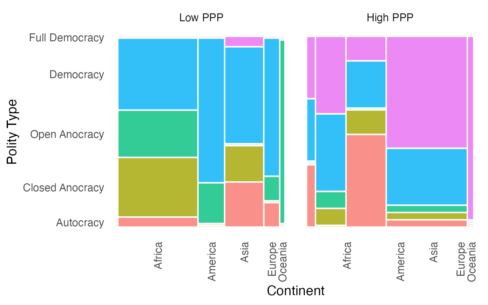
ただし、一つ問題があります。それは目盛りラベルの位置です。例えば、右側の横軸目盛りラベルの場合、セルの位置とラベルの位置がずれています。これは2つのファセットが同じ目盛りを共有し、左側の方に合わせられたため生じるものです。よく見ると横軸も縦軸も目盛りラベルに位置が同じであることが分かります。これを解消するためには、facet_wrap()の内部にscale = "free"を指定します93。これは各ファセットが独自のスケールを有することを意味します。
Mosaic_df %>%
ggplot() +
geom_mosaic(aes(x = product(Polity, Continent), fill = Polity),
na.rm = TRUE) +
labs(x = "Continent", y = "Polity Type") +
facet_wrap(~PPP, ncol = 2, scale = "free") +
theme_minimal(base_size = 16) +
theme(legend.position = "none",
panel.grid = element_blank(),
axis.text.x = element_text(angle = 90, vjust = 0.5, hjust = 1))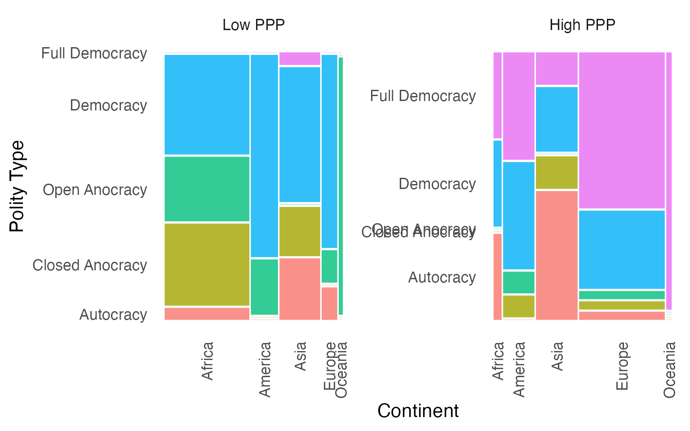
右側ファセットの横軸ラベルが重なってしまいましたが、これでとりあえず完成です。アフリカにおけるOpen AnocracyとClosed Anocracyの頻度が0であるため、これは仕方ありません。一つの対処方法としては以下のように縦軸目盛りを削除し、凡例で代替することが考えられます。
Mosaic_df %>%
ggplot() +
geom_mosaic(aes(x = product(Polity, Continent), fill = Polity),
na.rm = TRUE) +
labs(x = "Continent", y = "Polity Type", fill = "Polity Type") +
facet_wrap(~PPP, ncol = 2, scale = "free_x") +
theme_minimal(base_size = 16) +
theme(panel.grid = element_blank(),
axis.text.y = element_blank(),
axis.text.x = element_text(angle = 90, vjust = 0.5, hjust = 1))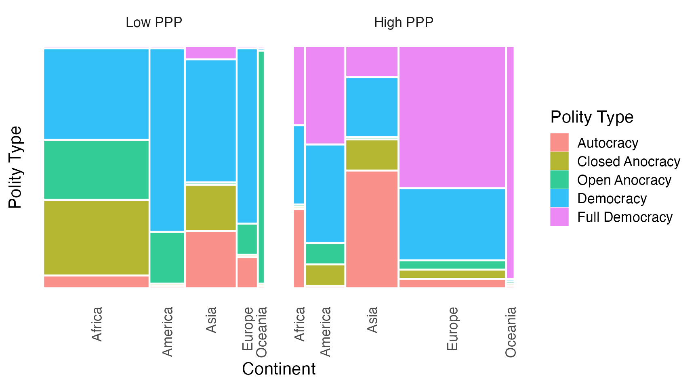
20.16 その他のグラフ
The R Graph Galleryでは本書で紹介できなかった様々な図のサンプルおよびコードを見ることができます。ここまで読み終わった方なら問題なくコードの意味が理解できるでしょう。{ggplot2}では作成できないグラフ（アニメーションや3次元図、インタラクティブなグラフ）についても、他のパッケージを利用した作成方法について紹介されているので、「こんな図が作りたいけど、作り方が分からん！」の時には、まずThe R Graph Galleryに目を通してみましょう。
参考資料
最後の
_cはマッピングする変数（ここではHDI_2018）が連続変数（continuous）であることを意味します。↩︎これから登場する
geom_bump()幾何オブジェクトが使えるようになります。{ggbump}を使用せず、{ggplot2}が提供するgeom_line()でも代替可能です。geom_line()の場合、直線で順位の変化が表示され、geom_bump()の場合は曲線で表示されます。丸い感じの図を好まない方なら、{ggbump}を読み込まず、geom_bump()をgeom_line()に書き換えてください。↩︎今回は2期間の変化を示していますが、3期以上の場合、
axis3、axis4、…と追加してください。↩︎今回の例だと、
labelもggplot()内部でマッピング可能です。↩︎他にも縦軸のみ共有する
"free_x"、横軸のみ共有する"free_y"があり、既定値は"fixed"です。↩︎